🎯 Практикум: решение задач по технологиям Cisco
Здесь собраны практические задачи по каждой технологии из Лабораторных 1 и 2. Для каждой — условие, пошаговое решение и проверка. Это не просто теория, а отработка навыков на конкретных сценариях.
1. VLAN и Trunk
Задача: Разделить сеть на два VLAN (10 — IT, 20 — Бухгалтерия) и настроить trunk между коммутаторами. Разделение отделов в одном физическом свитче + один аплинк между свитчами. Без trunk пришлось бы тянуть отдельный кабель на каждый VLAN.
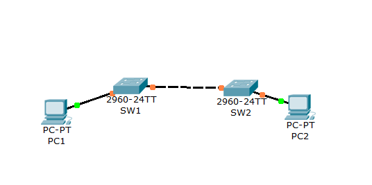
📋 Условие
- Коммутатор SW1 (доступ к VLAN 10 и 20).
- Коммутатор SW2 (доступ к VLAN 10 и 20).
- Между SW1 и SW2 — trunk (802.1Q).
- ПК1 в VLAN 10 (на SW1) и ПК2 в VLAN 20 (на SW2).
🛠️ Решение
Шаг 0. Подготовка: подключитесь к коммутатору по консоли или SSH. Узнайте, на каких портах реально висят ПК (по схеме или через show cdp neighbors / show mac address-table). Войдите в режим конфигурации: enable → configure terminal.
enable ! Проверить, что порты свободны и нет чужих VLAN show vlan brief show interfaces status configure terminal
Шаг 1. Создать VLAN на SW1 и SW2:
vlan 10 name IT vlan 20 name Accounting
Шаг 2. Настроить access-порты для ПК:
interface f0/1 switchport mode access switchport access vlan 10 interface f0/2 switchport mode access switchport access vlan 20
Шаг 3. Настроить trunk между SW1 и SW2:
interface f0/24 switchport trunk encapsulation dot1q switchport mode trunk switchport trunk allowed vlan 10,20
✅ Проверка
Этап 0. Физика и база
| Команда / действие | ✅ Должно быть | 📌 Если не так |
|---|---|---|
show interfaces status | Порты ПК и f0/24 — connected. | notconnect — кабель или погашенный порт; VLAN здесь ещё не виден, это уровень L1 |
show cdp neighbors | SW2 виден через f0/24 (и наоборот). | Не виден — линк не поднялся или cdp run выключен |
show vlan brief | Порты ПК числятся в VLAN 10/20, все прочие — в VLAN 1. | Все порты в VLAN 1 — доступ-настройка ещё не применена |
Этап 1. VLAN созданы на ОБОИХ свитчах
| Команда / действие | ✅ Должно быть | 📌 Если не так |
|---|---|---|
show vlan brief на SW1 и на SW2 | VLAN 10 (IT) и 20 (Accounting) существуют на обоих свитчах. | VLAN есть только на SW1 — trunk не создаёт VLAN на соседе. Если на SW2 VLAN не создан, порты в него не назначить, а трафик через транк не пройдёт. Создайте vlan 10 / vlan 20 на SW2 руками (VTP в лабах не тянет) |
Этап 2. Access-порты
| Команда / действие | ✅ Должно быть | 📌 Если не так |
|---|---|---|
show interfaces f0/1 switchport | Access Mode VLAN: 10, режим static access. | Port в VLAN 1 — забыт switchport access vlan; режим trunk — ПК в тегированном порту не заговорит |
show interfaces f0/2 switchport | Access Mode VLAN: 20. | Перепутаны VLAN местами — классическая ловушка: с виду всё работает, но отделы «поменялись» |
Этап 3. Trunk
| Команда / действие | ✅ Должно быть | 📌 Если не так |
|---|---|---|
show interfaces trunk | f0/24 в trunking, VLANs allowed: 10,20. | Порта нет в списке — режим не trunk или allowed vlan не задан; VLAN в списке «pruning» — порт-сосед не знает о них |
show interfaces f0/24 switchport | Trunking Enabled, Native VLAN 1 на ОБОИХ свитчах. | Mismatch native VLAN — native должен совпадать на концах транка, иначе native-трафик перепутается между VLAN (в PT ловится через CDP-сообщение о mismatch) |
show interfaces f0/24 | up/up, счётчики input/output ошибок не растут. | Ошибки растут — либо mismatch, либо дуплекс на одной из сторон сбит |
Этап 4. Трафик (главный тест)
| Команда / действие | ✅ Должно быть | 📌 Если не так |
|---|---|---|
| ping с ПК1 (VLAN 10) до ПК2 (VLAN 20) | Не проходит — это норма (разные VLAN, нет маршрутизации). | Проходит — порты не в тех VLAN / trunk не работает |
| ping между двумя ПК в одном VLAN (если есть ПК3 в VLAN 10 на SW2) | Проходит — трафик пошёл через trunk с тегом 802.1Q. | Не проходит внутри одного VLAN — VLAN не создан на SW2 или не в allowed на транке |
show mac address-table на SW2 | MAC ПК1 выучен на порту f0/24 (через транк). | MAC не выучен — тегированный трафик не проходит: смотреть транк и allowed VLAN |
💡 Аналогия: VLAN — это как разные квартиры в одном доме (свитче). Trunk — это общий лифт, который возит жильцов всех квартир, но у каждого пассажира есть «этикетка» (тег 802.1Q), чтобы лифт знал, на каком этаже его высадить.
2. EtherChannel LACP
Задача: Объединить 4 физических линка между SW1 и SW2 в один логический канал (Po1) с помощью LACP. Агрегация полосы и резервирование: 4×100 Мбит = 400 Мбит, падение одного линка не рвёт связь.
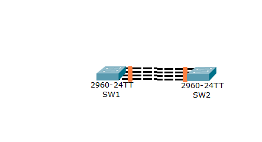
📋 Условие
- SW1 и SW2 соединены 4 портами (f0/1–f0/4).
- Нужно объединить их в Po1 (LACP, active).
- Проверить, что при падении одного порта канал остаётся рабочим.
🛠️ Решение
Шаг 0. Подготовка: убедитесь, что все 4 порта (f0/1–f0/4) физически подключены и подняты. Проверьте скорость/дуплекс на каждом: show interfaces f0/1 (и т.д.). Если скорость разная — выровняйте до начала сборки канала. Войдите в режим конфигурации: enable → configure terminal.
enable show interfaces status show interfaces f0/1 ! Убедиться, что все 4 порта в состоянии connected
Шаг 1. На SW1 (активная сторона):
configure terminal interface range f0/1-4 channel-group 1 mode active switchport trunk encapsulation dot1q switchport mode trunk speed 100 duplex full interface port-channel 1 switchport trunk encapsulation dot1q switchport mode trunk
Шаг 2. На SW2 (активная сторона):
interface range f0/1-4 channel-group 1 mode active switchport trunk encapsulation dot1q switchport mode trunk speed 100 duplex full interface port-channel 1 switchport trunk encapsulation dot1q switchport mode trunk
Важно: в Packet Tracer 6.2 без speed 100 и duplex full на всех портах канал не соберётся. В реальной жизни LACP технически допускает разные скорости, но выравнивать их — хорошая практика (иначе балансировка будет неравномерной).
✅ Проверка
Этап 0. Физика до сборки канала
| Команда / действие | ✅ Должно быть | 📌 Если не так |
|---|---|---|
show interfaces status | f0/1–f0/4 на обоих свитчах — connected, 100/full. | Хотя бы один порт notconnect — LACP не соберёт канал из неполного набора |
show etherchannel summary | Po1 ещё не существует (или пустой). | Есть старые каналы с прошлых лаб — удалить: no channel-group на портах, иначе LACP запутается в конфигурации |
Этап 1. Сборка канала
| Команда / действие | ✅ Должно быть | 📌 Если не так |
|---|---|---|
show etherchannel summary | Po1 в статусе SU, порты P. | SD — канал в down; D — несовместимая конфигурация члена; I — standalone; s — suspended (обычно из-за mismatch speed/duplex/VLAN) |
show etherchannel port-channel | Протокол LACP, все 4 порта в группе. | Wrong mode: on vs active/passive. on+on соберётся, но без LACP; active+active — ок; passive+passive — не соберётся |
show interfaces port-channel 1 | up/up, счётчики ошибок не растут. | Порт-член с другой конфигурацией (VLAN, trunk) — выровняйте настройки на всех членах |
show interfaces f0/1 | include duplex|speed | Одинаковые speed/duplex на всех членах. | В PT 6.2 без speed 100 duplex full канал не соберётся |
Этап 2. Транк поверх канала
| Команда / действие | ✅ Должно быть | 📌 Если не так |
|---|---|---|
show interfaces trunk | Po1 в списке транков, VLANs allowed согласованы. | Транк не поднялся — настройка switchport mode trunk применена только на физ. портах, но не на Po1 (или наоборот) |
| ping между ПК за SW1 и за SW2 (если есть) | Проходит — канал пропускает тегированный трафик. | Не проходит — канал собран, но транк не согласован |
Этап 3. Failover
| Команда / действие | ✅ Должно быть | 📌 Если не так |
|---|---|---|
Тест на отказ: shutdown f0/1 на SW1 → no shutdown | Канал остаётся SU, пинги не прерываются. | Канал падает целиком — члены не в одной группе или разные VLAN/режимы на членах |
show etherchannel summary во время сбоя | Po1 SU, но один из портов выбыл (3 из 4 активны). | Все порты D/s — группа развалилась, смотреть mismatch на членах |
💡 Аналогия: EtherChannel — это как несколько полос на шоссе, которые вместе образуют одну широкую дорогу. LACP — это «диспетчер», который проверяет, что все полосы одинаковой ширины и ведут в одну сторону. Если одна полоса закрыта — машины едут по остальным, пробки нет.
3. EtherChannel PAgP
Задача: Объединить 4 физических линка между SW3 и SW4 в один логический канал (Po2) с помощью PAgP. То же, что LACP, но в чисто Cisco-среде (легаси-протокол, в новых сетях почти не встретите).
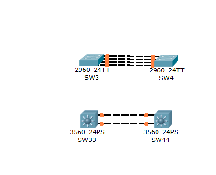
📋 Условие
- SW3 и SW4 соединены 4 портами (f0/1–f0/4).
- Нужно объединить их в Po2 (PAgP).
- Одна сторона —
desirable, другая —auto.
🛠️ Решение
Шаг 0. Подготовка: то же, что и в задаче 2 — проверить физическое состояние портов и одинаковые speed/duplex. Убедитесь, что ни на одном порту нет остатков старой конфигурации (например, channel-group с прошлых лаб). Если есть — удалите: no channel-group. Войдите в режим конфигурации.
enable show interfaces status ! Если порт уже в канале — снять configure terminal interface range f0/1-4 no channel-group exit
Шаг 1. На SW3 (desirable):
interface range f0/1-4 channel-group 2 mode desirable switchport trunk encapsulation dot1q switchport mode trunk speed 100 duplex full interface port-channel 2 switchport trunk encapsulation dot1q switchport mode trunk
Шаг 2. На SW4 (auto):
interface range f0/1-4 channel-group 2 mode auto switchport trunk encapsulation dot1q switchport mode trunk speed 100 duplex full interface port-channel 2 switchport trunk encapsulation dot1q switchport mode trunk
Важно: в Packet Tracer 6.2 без speed 100 и duplex full на всех портах канал не соберётся. В реальной жизни PAgP технически допускает разные скорости, но выравнивать их — хорошая практика.
✅ Проверка
Этап 0. Физика до сборки канала
| Команда / действие | ✅ Должно быть | 📌 Если не так |
|---|---|---|
show interfaces status | f0/1–f0/4 на SW3 и SW4 — connected, 100/full. | Разные speed/duplex на членах — канал не соберётся (в PT 6.2 — всегда) |
show etherchannel summary | Старых каналов нет. | Остатки прошлых лаб — удалить через no channel-group, иначе PAgP не стартует |
Этап 1. Сборка канала
| Команда / действие | ✅ Должно быть | 📌 Если не так |
|---|---|---|
show etherchannel summary | Po2 в статусе SU, порты P. | SD/D/I/s — канал не собрался |
show etherchannel port-channel | Протокол PAgP: SW3 — desirable, SW4 — auto. | Wrong mode: обе стороны auto — канал не соберётся (оба ждут, кто первый предложит); desirable+desirable — соберётся; desirable+auto — соберётся; on с PAgP — не соберётся |
show pagp neighbor (если доступна) | Сосед виден, режим совпадает. | Соседа нет — режимы не совместимы или линк не поднят |
Этап 2. Транк поверх канала
| Команда / действие | ✅ Должно быть | 📌 Если не так |
|---|---|---|
show interfaces trunk | Po2 в режиме trunk. | Нет транка — интерфейс Po2 не настроен; настройки надо задавать и на физ.портах, и на Po2 |
Этап 3. Failover
| Команда / действие | ✅ Должно быть | 📌 Если не так |
|---|---|---|
Тест на отказ: shutdown f0/2 на SW3 | Канал остаётся SU. | Канал падает целиком — члены не в одной группе |
no shutdown на f0/2 | Порт вернулся в группу, канал снова 4 члена. | Порт остался D/s — после возвращения настроек снова выровнять speed/duplex/VLAN |
💡 Аналогия: PAgP — это тот же «диспетчер», что и LACP, но работает только в «своём» городе (сети Cisco). Одна сторона кричит «я хочу канал!» (desirable), другая отвечает «я слышу, давай!» (auto). Если оба молчат — канала нет.
4. STP (Защита от петель)
Задача: Настроить Rapid-PVST+ так, чтобы SW1 был корневым мостом, а избыточные порты на SW3 заблокировались. Без STP кольцо из свитчей = broadcast-шторм за секунды и падение всей L2-сети.
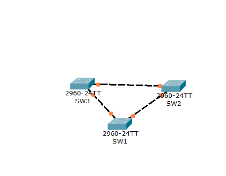
📋 Условие
- Три коммутатора (SW1, SW2, SW3) соединены в кольцо.
- SW1 должен стать Root Bridge (приоритет 24576).
- На SW3 избыточные порты должны быть в статусе
Altn BLK.
🛠️ Решение
Шаг 0. Подготовка: проверьте текущего корневого моста (show spanning-tree vlan 1 — строка Root ID). Если корень уже другой — это нормально, мы его переопределим. Убедитесь, что на всех трёх свитчах одинаковый режим STP (например, rapid-pvst). Войдите в режим конфигурации.
enable show spanning-tree vlan 1 show spanning-tree summary
Шаг 1. Включить Rapid-PVST+ на всех свитчах:
configure terminal spanning-tree mode rapid-pvst
Шаг 2. Назначить SW1 корневым мостом:
spanning-tree vlan 1,100,102-107 priority 24576
Примечание: priority 24576 — это ручной способ назначить корень. Альтернатива — spanning-tree vlan 1,100,102-107 root primary: макрос, который сам выставляет приоритет 24576 (или ниже текущего корня на 4096). Результат одинаковый, но root primary удобнее: не нужно помнить числа.
✅ Проверка
Этап 0. Режим STP и линки
| Команда / действие | ✅ Должно быть | 📌 Если не так |
|---|---|---|
show spanning-tree summary | Режим rapid-pvst на всех трёх свитчах. | Разные режимы STP — BPDU не согласуются, кольцо не будет корректно разблокировано |
show interfaces status (кольцо) | Все порты кольца connected. | Слабое звено в кольце — STP не сможет выбрать альтернативный путь при отказе |
Этап 1. Корневой мост
| Команда / действие | ✅ Должно быть | 📌 Если не так |
|---|---|---|
show spanning-tree vlan 1 на SW1 | Строка This bridge is the root, Priority 24576. | Корень не SW1 — приоритет 24576 не применился (проверить, что задан именно для VLAN 1, а не только для 100 и 102-107) |
show spanning-tree vlan 1 на SW2/SW3 | Root ID совпадает с MAC SW1, приоритет 24576. | Слышат другой корень — проверить, что приоритет задан на всех VLAN и SW1 реально включён |
Этап 2. Блокировка и роли
| Команда / действие | ✅ Должно быть | 📌 Если не так |
|---|---|---|
show spanning-tree vlan 1 на SW3 | Порты, ведущие к SW2 (или к SW1 — по стоимости пути), — в Altn BLK. | Оба порта Desg FWD = петля, блокировки нет |
| Подождать 30–50 сек после включения STP | Оранжевые линки в PT — это норма (blocking, а не ошибка). | Если порты остаются оранжевыми дольше минуты — смотрите режим STP и priority |
show spanning-tree vlan 1 на SW2 | Один порт Root FWD, остальные Desg FWD. | Все порты Desg — нет понимания, куда идти к корню |
Этап 3. Failover
| Команда / действие | ✅ Должно быть | 📌 Если не так |
|---|---|---|
Shutdown основного пути (например, shutdown линка SW1–SW2) | SW3 (или SW2) переходит на резервный путь: заблокированный порт становится FWD за секунды (rapid-pvst сходится быстро). | Порты остаются BLK — смотрим режим STP и приоритеты |
| ping между ПК во время сбоя | 1–2 потери, дальше пинг продолжается. | Долгие потери — STP не сходится или кольцо не полнокомплектное |
Вернуть линк: no shutdown | Роли вернулись: заблокированный порт снова Altn BLK. | Осталось заблокированным не то — норма, STP выбрал свой путь; главное — нет петли |
💡 Аналогия: STP — это как схема объезда на дороге с кольцом. Один мост назначается «главным» (Root Bridge), остальные строят к нему кратчайшие пути. Лишние дороги, которые могли бы замкнуть кольцо, перекрываются (Blocking), чтобы машины не ездили по кругу. Если главный мост сломается — резервный сразу откроется.
5. OSPF (Динамическая маршрутизация)
Задача: Настроить OSPF между двумя роутерами (R1 и R2) и проверить, что они видят сети друг друга. Автоматический обмен маршрутами между роутерами; ручные статики не масштабируются.
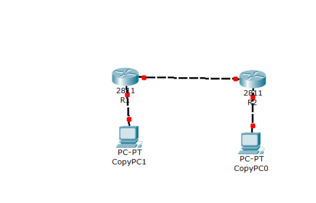
📋 Условие
- R1: сеть 10.0.0.0/30 на f0/0, сеть 192.168.1.0/24 на f0/1 (LAN).
- R2: сеть 10.0.0.0/30 на f0/0, сеть 192.168.2.0/24 на f0/1 (LAN).
- Настроить OSPF Area 0, чтобы R1 и R2 обменялись маршрутами.
- Включить аутентификацию MD5.
🛠️ Решение
Шаг 0. Подготовка: проверьте IP-адресацию на интерфейсах (show ip interface brief). Убедитесь, что интерфейсы сети 10.0.0.0/30 и 192.168.1.0/24 реально настроены и все линки присоединены и подняты, в т.ч. и для конечных устройств. Проверьте связность до соседа: ping 10.0.0.2 и до конечного ПК (с R1 и по аналогии с R2). Войдите в режим конфигурации.
enable show ip interface brief configure terminal int f0/0 ip addr 10.0.0.1 255.255.255.252 no shut exit int f0/1 ip addr 192.168.1.1 255.255.255.0 no shut
Шаг 1. Настроить R1:
router ospf 1 router-id 1.1.1.1 network 10.0.0.0 0.0.0.3 area 0 network 192.168.1.0 0.0.0.255 area 0 area 0 authentication message-digest interface f0/0 ip ospf message-digest-key 1 md5 secret interface f0/1 ip ospf message-digest-key 1 md5 secret
Шаг 2. Настроить R2:
router ospf 1 router-id 2.2.2.2 network 10.0.0.0 0.0.0.3 area 0 network 192.168.2.0 0.0.0.255 area 0 area 0 authentication message-digest int range f0/0-1 ip ospf message-digest-key 1 md5 secret
✅ Проверка
Этап 0. Базовая связность
| Команда / действие | ✅ Должно быть | 📌 Если не так |
|---|---|---|
show ip interface brief | f0/0 и f0/1 — up/up с нужными IP (10.0.0.x и 192.168.x.1). | administratively down — забыт no shut; IP не тот — OSPF не соберёт соседство |
| ping 10.0.0.2 (с R1) | Успешно. | Не пингуется — OSPF не соберётся, начинать соседство без L3-связности бессмысленно |
| ping до ПК своей LAN (с R1) | Успешно. | Не проходит — интерфейс LAN поднят, но сеть не объявлена или ПК без шлюза |
Этап 1. Соседство
| Команда / действие | ✅ Должно быть | 📌 Если не так |
|---|---|---|
show ip ospf neighbor | Сосед в статусе FULL, Router ID 2.2.2.2. | EXSTART/EXCHANGE — MTU; соседа нет — area/subnet/mask/MD5/hello; ATTEMPT/DOWN — hello не проходят |
show ip ospf interface f0/0 | Area 0, ключ MD5 с номером 1, hello-таймер 10 с. | Area не та — соседство не соберётся; ключа нет — смотрите, что MD5 включён и на глобальном уровне area, и на интерфейсе |
show ip ospf | Router ID 1.1.1.1, Area 0 активна. | Router ID не тот, что планировали — сбросьте clear ip ospf process (или перезагрузите роутер) |
Этап 2. Маршруты
| Команда / действие | ✅ Должно быть | 📌 Если не так |
|---|---|---|
show ip route ospf | Маршрут до сети 192.168.2.0 с меткой O, next-hop 10.0.0.2. | Соседство есть, маршрута нет — не та area, либо выключен интерфейс присоединенного устройства. Так будет, несмотря на «no shut» интерфейса 2-ой сети и его зелёный линк в CPT |
show ip protocols | В Routing for Networks перечислены обе сети, аутентификация message-digest. | Сети нет в списке — проверить маску wildcard (0.0.0.3 для /30, 0.0.0.255 для /24) |
Этап 3. Связность между LAN
| Команда / действие | ✅ Должно быть | 📌 Если не так |
|---|---|---|
| ping 192.168.2.1 (с R1) | Успешно. | Не проходит — MD5 mismatch / ACL |
| ping 192.168.2.10 (с ПК за R1, если есть) | Успешно — с шлюзом по умолчанию на ПК (192.168.1.1). | Не проходит с ПК, но проходит с R1 — ПК без шлюза или шлюз не тот |
Этап 4. Тест аутентификации (наглядное подтверждение MD5)
| Команда / действие | ✅ Должно быть | 📌 Если не так |
|---|---|---|
Временно смените ключ на одном из роутеров: ip ospf message-digest-key 1 md5 другоеслово | Соседство разорвалось: show ip ospf neighbor — сосед и маршруты исчезли. | Соседство не рвётся — аутентификация не включена на этой сети/интерфейсе, смотрите area 0 authentication message-digest и ключ на интерфейсе |
Вернуть ключ: ip ospf message-digest-key 1 md5 secret | Соседство восстановилось, маршрут O 192.168.2.0 вернулся. | Не восстановилось — проверьте, что ключ на ОБОИХ роутерах снова одинаковый |
- Смена ключа — это живое доказательство для отчёта: вы видите руками, что без совпадающего ключа OSPF не доверяет соседу. Это нагляднее любого вывода
show. debug ip ospf helloв PT 6.2 может не работать или рвать соседство — не стоит увлекаться, ограничьтесьshow-командами.
💡 Аналогия: OSPF — это как навигатор, который строит карту города. Каждый роутер рассказывает соседям, что он видит (LSDB), и все вместе вычисляют кратчайшие пути по алгоритму Дейкстры. Если одна улица закрыта — навигатор сам перестроит маршрут.
6. HSRP (Резервирование шлюза)
Задача: Настроить HSRP на двух роутерах (R1 и R2), чтобы при падении R1 трафик перехватывал R2 без обрыва связи у клиентов. Шлюз по умолчанию не должен быть single point of failure — тогда клиенты не заметят падения R1.
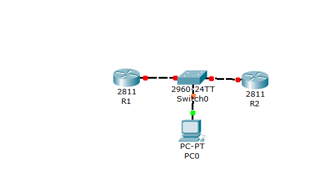
📋 Условие
- R1 (192.168.1.3) ---- SW ---- R2 (192.168.1.4).
- ПК (192.168.1.10) ---- SW.
- Виртуальный IP-шлюз: 192.168.1.2.
- R1 — Active (приоритет 150, preempt).
- R2 — Standby (приоритет 100).
🛠️ Решение
Шаг 0. Подготовка: проверьте, что R1 и R2 видят друг друга по L2 (ping между их реальными IP). Убедитесь, что на интерфейсах f0/0 нет остатков старой конфигурации HSRP (например, standby 2). Если есть — удалите. Войдите в режим конфигурации.
enable show standby brief ! Если есть лишние группы — удалить configure terminal interface f0/0 no standby 2 exit
Шаг 1. Настроить R1 (Active):
interface f0/0 standby 1 ip 192.168.1.2 standby 1 priority 150 standby 1 preempt
Шаг 2. Настроить R2 (Standby):
interface f0/0 standby 1 ip 192.168.1.2 standby 1 priority 100 standby 1 preempt
Зачем preempt: без него R1 после перезагрузки останется Standby, даже если у него приоритет 150 (выше, чем 100 у R2). preempt разрешает «отбирать» роль Active, если приоритет выше. Если preempt только у R2 — R1 не сможет вернуть роль. Если у обоих — R1 вернёт Active (150 > 100).
При этом не забудьте no shutdown на f0/0 обоих роутеров: без него линки останутся красными, а группа HSRP вообще не поднимется.
✅ Проверка
Этап 0. Базовая связность и топология
| Команда / действие | ✅ Должно быть | 📌 Если не так |
|---|---|---|
show ip interface brief на R1 и R2 |
Fa0/0: up/up, IP 192.168.1.3 и 192.168.1.4 | administratively down — забыт no shutdown; down/down — кабель или порт |
show ip arp на R1 |
Видна запись для 192.168.1.10 (MAC ПК) | Записи нет — ПК не в сегменте, линк не поднялся |
show mac address-table на свитче |
Порты ПК и обоих роутеров в одной VLAN (по умолчанию VLAN 1) | Разные VLAN — трафик не пойдёт, HSRP не поднимется |
ping 192.168.1.3 и ping 192.168.1.4 с ПК |
Оба реальных IP отвечают | Не пингуются — проблема в L2, до HSRP дело не дойдёт |
Этап 1. Состояние группы HSRP
| Команда / действие | ✅ Должно быть | 📌 Если не так |
|---|---|---|
show standby brief |
R1 — Active (Pri 150), R2 — Standby (Pri 100), оба адреса 192.168.1.2, группа 1 | Два Active — split brain (нет общего L2 или разные группы); оба Init — VLAN down или неверный IP в группе |
show standby |
State is Active; virtual IP 192.168.1.2; virtual MAC 0000.0C9F.F001; timers 3/1 (hello/hold) | MAC не вида 0000.0Cxx.Fxxx — номер группы различается на роутерах; timers расходятся — выровнять на обоих |
show standby | include preempt |
Preempt есть на обоих роутерах | Нет preempt — R1 не вернёт роль после ребута |
show run | section standby |
Блок «standby 1 ip / priority / preempt» на обоих роутерах | Разные номера группы или IP — группа не соберётся |
Этап 2. Работа клиента
| Команда / действие | ✅ Должно быть | 📌 Если не так |
|---|---|---|
arp -d на ПК, затем arp -a и ping 192.168.1.2 |
MAC шлюза — 0000.0C9F.F001 (виртуальный); пинг идёт | MAC реального роутера — трафик идёт мимо HSRP: очистить ARP и проверить, кто отвечает |
ping 192.168.1.2 с ПК |
Не прерывается при смене ролей | Прерывается надолго — проверить priority/preempt и hold-таймер |
Этап 3. Failover и восстановление
| Команда / действие | ✅ Должно быть | 📌 Если не так |
|---|---|---|
Тест Failover: shutdown f0/0 на R1 |
R2 становится Active за время hold-таймера (~3 с): смена купола в консоли R2, сообщение «Standby router is active» | R2 остаётся Standby — VIP или номер группы не совпадают, либо линк R2 к свитчу не поднят |
ping 192.168.1.2 с ПК во время сбоя |
1–2 потерянных пакета, дальше пинг продолжается (R2 перехватил виртуальный IP) | Пинг умирает навсегда — Standby не принял роль, см. строку выше |
Вернуть R1: no shutdown f0/0 |
R1 возвращает роль Active (preempt, 150 > 100), R2 снова Standby | R1 остался Standby — нет preempt на R1 |
show standby brief после восстановления |
R1 Active, R2 Standby — как до теста | Роли «перевернулись» и не вернулись — preempt настроен только на одной стороне |
Этап 4 (бонус). Живая смена ролей и трекинг аплинка
| Команда / действие | ✅ Должно быть | 📌 Если не так |
|---|---|---|
debug standby brief на R2 + shutdown f0/0 на R1 |
Сообщения вида «Hellotime expired → Active: 192.168.1.3 → Taking over as Active» с метками времени | Дебаг молчит — R2 не видит hellos соседа (проблема в сегменте) |
standby 1 track <интерфейс> <cost> на обоих |
При падении аплинка R1 к внешней сети роль уходит к R2, даже если Fa0/0 жив | Трекинга нет — R1 остаётся Active с «мёртвым» WAN, клиенты теряют выход наружу |
debug standby briefможет засыпать консоль — запускать осторожно и выключать черезundebug all. Зато в отчёте это самый наглядный аргумент: виден сам момент передачи роли с таймстампами.- Hold-таймер (1 с по умолчанию) определяет, сколько пакетов потеряет клиент при сбое. В отчёте стоит указать timers 3/1 и объяснить, что потеря ограничена ~3 секундами.
- Строку про
standby trackможно вынести отдельным пунктом «что можно улучшить» — направление развития лабы.
💡 Аналогия: HSRP — это как два охранника на входе в офис, но у них общее удостоверение (виртуальный IP). Один работает (Active), второй на подстраховке (Standby). Если первый упадёт — второй сразу берёт его удостоверение, и посетители не замечают подмены.
7. BGP (Стык с провайдером)
Задача: Настроить eBGP между корпоративными роутерами (R1, R2 2811 — AS 65002) и провайдером (ISP 2911 — AS 65001), чтобы R1 и R2 получали маршрут в интернет и анонсировали ISP свою сеть. Два аплинка дают резервирование: отказ одного стыка не разрывает связность — трафик уходит через второй.
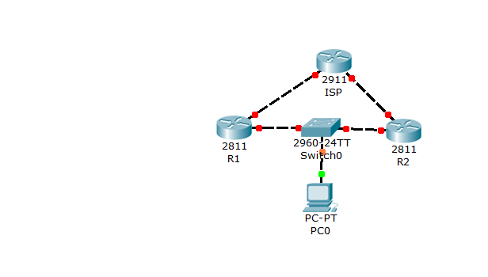
📋 Условие
- Топология: ПК (192.168.1.10) — SW — R1 и R2 (HSRP из задачи 6) — двумя линками к ISP.
- R1: AS 65002, LAN 192.168.1.5/24 на f0/0, стык 10.0.0.2/30 на f0/1.
- R2: AS 65002, LAN 192.168.1.150/24 на f0/0, стык 10.0.1.2/30 на f0/1.
- ISP: AS 65001, 10.0.0.1/30 на g0/0 и 10.0.1.1/30 на g0/1, Loopback0 8.8.8.8/32 — «хост в интернете».
- R1 и R2 анонсируют сеть 192.168.1.0/24. ISP отдаёт обоим маршрут по умолчанию (0.0.0.0/0).
- Шлюз ПК — виртуальный IP 192.168.1.2 (HSRP), конфигурация HSRP и NAT из предыдущих задач сохраняется.
🛠️ Решение
Шаг 0. Подготовка: проверьте IP-связность стыков: с R1 — ping 10.0.0.1, с R2 — ping 10.0.1.1. BGP строится поверх IP: пока стыки не пингуются, соседство не поднимется в принципе.
enable ping 10.0.0.1 show ip interface brief configure terminal
Шаг 1. ISP — интерфейсы и loopback «интернета»:
interface g0/0 ip address 10.0.0.1 255.255.255.252 no shutdown interface g0/1 ip address 10.0.1.1 255.255.255.252 no shutdown interface loopback0 ip address 8.8.8.8 255.255.255.255 end
Шаг 2. R1 — внешний интерфейс (внутренний и HSRP уже настроены в задаче 6):
interface f0/1 ip address 10.0.0.2 255.255.255.252 ip nat outside no shutdown exit router bgp 65002 neighbor 10.0.0.1 remote-as 65001 network 192.168.1.0 mask 255.255.255.0 end
Шаг 3. R2 — зеркально, второй стык в отдельной подсети /30:
interface f0/1 ip address 10.0.1.2 255.255.255.252 ip nat outside no shutdown exit router bgp 65002 neighbor 10.0.1.1 remote-as 65001 network 192.168.1.0 mask 255.255.255.0 end
Шаг 4. ISP — BGP и дефолт. Сначала соседей, потом дефолт. Команда default-originate в Packet Tracer не поддерживается — CLI ответит % Invalid input detected. Обход: кладём дефолт в RIB самого ISP и анонсируем его через network 0.0.0.0:
router bgp 65001 neighbor 10.0.0.2 remote-as 65002 neighbor 10.0.1.2 remote-as 65002 network 8.8.8.8 mask 255.255.255.255 network 0.0.0.0 mask 0.0.0.0 exit ip route 0.0.0.0 0.0.0.0 loopback0 end
Три важных нюанса:
networkв BGP не «создаёт» сеть, а только объявляет уже существующую в таблице маршрутизации. Поэтому строкаip route 0.0.0.0 0.0.0.0 loopback0обязательна: без дефолта в RIB ISP анонс0.0.0.0/0не заработает. IOS предупредит%Default route without gateway...— это не ошибка, а предупреждение; в реальной сети так делать не стоит, в лабе ISP — «конец интернета», и маршрут формально нужен только для BGP-анонса.- Указать шлюзом дефолта собственный адрес (например,
ip route 0.0.0.0 0.0.0.0 8.8.8.8на самом ISP) нельзя — получим%Invalid next hop address (it's this router). - Вводите блоки BGP строго в консоль нужного устройства. Если блок ISP вставить в R1, роутер объявит соседом самого себя — увидите
% Cannot configure the local system as neighbor. Лечится полным удалением процесса:no router bgp 65001, затем настройка с нуля.
✅ Проверка
Этап 0. Физика и базовая связность
| Команда / действие | ✅ Должно быть | 📌 Если не так |
|---|---|---|
show ip interface brief на R1, R2, ISP | Все стыковые интерфейсы up/up: 10.0.0.1/30↔10.0.0.2/30 и 10.0.1.1/30↔10.0.1.2/30. | down/down — кабель/порт; administratively down — забыт no shutdown |
ping 10.0.0.1 с R1, ping 10.0.1.1 с R2 | Ответы приходят с обоих стыков. | Не пингуется — соседство BGP не поднимется в принципе: BGP строится поверх IP |
Этап 1. Соседство BGP
| Команда / действие | ✅ Должно быть | 📌 Если не так |
|---|---|---|
show ip bgp summary на ISP | Два соседа: вместо слова «State» — число полученных префиксов (например, 4). Первые 15–20 секунд Idle/Active — норма, eBGP поднимается не мгновенно. | Один сосед из двух — проверьте второй стык и remote-as; ошибка Cannot configure the local system as neighbor — блок ISP введён не в своё устройство, конфиг соседа совпадает с локальным IP |
show ip bgp neighbors 10.0.0.1 на R1 | State Established, BGP version 4, remote AS 65001. | Remote AS не тот, что на соседе — соседство зависнет в Idle; Active — R1 сам пытается открыть TCP, значит порт 179 на другой стороне закрыт |
show tcp brief | TCP-сессия на порту 179 (LISTEN/ESTAB с 10.0.0.x). | Сессии нет — ACL/маршрут до соседа отсутствуют |
Этап 2. Обмен маршрутами
| Команда / действие | ✅ Должно быть | 📌 Если не так |
|---|---|---|
show ip bgp на ISP | Сеть 192.168.1.0/24 с двумя путями: лучший > через 10.0.0.2 (R1), второй без > через 10.0.1.2 (R2). Плюс локальные 0.0.0.0/0 и 8.8.8.8/32. | Префикса нет — нет network на R1/R2 или сети нет в RIB (см. примечания); один путь вместо двух — соседство со вторым роутером не установлено |
show ip route на R1 и R2 | У каждого: B* 0.0.0.0/0 через своего ISP (R1 — via 10.0.0.1, R2 — via 10.0.1.1) и B 8.8.8.8. Строка «Gateway of last resort» — на стык. | Дефолта нет — не введён ip route 0.0.0.0 0.0.0.0 loopback0 на ISP либо не задан network 0.0.0.0 mask 0.0.0.0; подождите ~60 с, при необходимости clear ip bgp * soft |
show ip bgp neighbors 10.0.0.1 advertised-routes на R1 | R1 анонсирует 192.168.1.0/24. | Префикс не объявлен — нет network statement, либо сети нет в RIB (см. примечания) |
Этап 3. Сквозной трафик
| Команда / действие | ✅ Должно быть | 📌 Если не так |
|---|---|---|
ping 8.8.8.8 с ПК (шлюз 192.168.1.2) | 0% потерь. TTL ответов 254 — пакет прошёл один хоп от NAT-границы до loopback: доказательство, что трансляция сработала на внешнем интерфейсе. | Ответы не приходят — дефолт не дошёл до RIB или не работает NAT: show ip nat translations пусто → проверьте ACL, метки inside/outside и что они висят на реальных именах интерфейсов (на 2911 это g0/x, а не f0/x) |
traceroute 8.8.8.8 с ПК | Первый хоп — 192.168.1.2 (HSRP), дальше — стык ISP. | Пакет уходит не туда — проверьте таблицу маршрутизации активного роутера |
Тест разрыва: shutdown f0/1 на R1, затем no shutdown | Сессия рвётся мгновенно (fast-external-fallover), у ISP путь > до 192.168.1.0/24 переходит на 10.0.1.2 (R2), HSRP-роль перехватывает R2 — пинги с ПК не прерываются. После no shutdown соседство и роль Active возвращаются сами (preempt). | После восстановления соседство не поднялось само — проверьте neighbor-строки на обеих сторонах; пинги при обрыве умирают — смотрите, куда уходит Active-роль (show standby brief) и есть ли у оставшегося роутера живой стык к ISP |
networkв BGP объявляет только сети, уже лежащие в RIB (connected, static, выученные по IGP). Типичная ловушка: команда введена, сети нет — и вadvertised-routesпусто.default-originate— валидная команда реального IOS, но в Packet Tracer 6.2 её нет (кара под командой в CLI). Рабочий обход: дефолт в RIB ISP статикой +network 0.0.0.0 mask 0.0.0.0. Заодно это отличие стоит отметить в отчёте: «провайдер отдаёт полный дефолт, а не только маршрут до 8.8.8.8».- Если поправили
networkилиneighborи ждёте обновления — можно не ждать таймеров, а «мягко» перезапустить обмен:clear ip bgp * soft. TCP-сессия при этом не рвётся, роутеры просто заново обмениваются префиксами. Жёсткий вариантclear ip bgp *в лабе тоже допустим, но сессия пересоберётся с нуля (состояние Idle → Active → Established пройдёт заново). - В Packet Tracer holdtime/timers могут быть «заторможены»: после
no shutdownсоседство поднимается не мгновенно — дайте сессии 30–60 секунд перед повторной диагностикой. Само падение приshutdownинтерфейса происходит мгновенно (fast-external-fallover) — задержка есть только на восстановление. - NAT обязателен: без него пакет от ПК дойдёт до 8.8.8.8, а ответ ISP не найдёт обратного пути к 192.168.1.10 (ISP не знает эту сеть — она анонсирована только «внутрь» eBGP). Симптом «пинг полупроходит» — классика для траблешутинга.
- После настройки не забудьте
write memoryна всех устройствах — PT-лабы теряют конфиг при случайном закрытии.
💡 Аналогия: BGP — это как дипломатические переговоры между странами (автономными системами). Каждая страна рассказывает соседям, какие дороги у неё есть, и договаривается, как пропускать чужие фуры. Внутренние дороги (OSPF) — это местные улицы, а BGP — международные трассы. Два стыка к ISP — как два погранперехода: закрылся один, фуры едут через второй.
8. IPv6 и OSPFv3 (Двухстековая маршрутизация)
Задача: Настроить IPv6-адресацию и OSPFv3 между двумя роутерами, проверить связность по IPv6. Двухстековая сеть — стандарт; OSPFv3 даёт ту же динамику, что OSPFv2, но для IPv6.
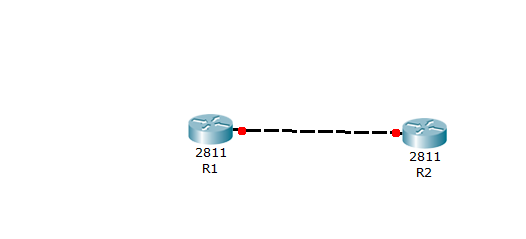
📋 Условие
- R1: сеть 2001:DB8:1::/64 на f0/0, сеть 2001:DB8:10::/64 на f0/1 (к R2).
- R2: сеть 2001:DB8:10::/64 на f0/0, сеть 2001:DB8:2::/64 на f0/1.
- Настроить OSPFv3 Area 0 для динамической маршрутизации.
🛠️ Решение
Шаг 0. Подготовка: проверьте, что IPv6 включён глобально: show ipv6 interface brief. Если интерфейсы в состоянии down — поднимите их. Войдите в режим конфигурации.
enable show ipv6 interface brief ! Если IPv6 не включён — включить configure terminal ipv6 unicast-routing
Шаг 1. Настроить R1:
ipv6 unicast-routing interface f0/0 ipv6 address 2001:DB8:1::1/64 ipv6 ospf 1 area 0 interface f0/1 ipv6 address 2001:DB8:10::1/64 ipv6 ospf 1 area 0 router ospfv3 1 router-id 1.1.1.1
Шаг 2. Настроить R2:
ipv6 unicast-routing interface f0/0 ipv6 address 2001:DB8:10::2/64 ipv6 ospf 1 area 0 interface f0/1 ipv6 address 2001:DB8:2::1/64 ipv6 ospf 1 area 0 router ospfv3 1 router-id 2.2.2.2
Примечание про Packet Tracer: если IOS в PT не принимает router ospfv3 1, используйте классический вариант: ipv6 router ospf 1 → внутри router-id 1.1.1.1. Включение OSPFv3 на интерфейсах командой ipv6 ospf 1 area 0 при этом не меняется. Router-id в IPv6 обязателен и вручную: автоматом берётся только из loopback или IPv4 — которых может не быть.
✅ Проверка
Этап 0. Адресация и физика
| Команда / действие | ✅ Должно быть | 📌 Если не так |
|---|---|---|
show ipv6 interface brief | Глобальные 2001:DB8:1::/64, 10::/64, 2::/64 + link-local FE80::, up. | Нет адреса / забыт ipv6 unicast-routing |
ping 2001:DB8:10::2 с R1 (линк к R2) | Ответы приходят. | Не пингуется — L3-связности нет, OSPFv3 не поднимется; проверьте маску /64 и no shutdown |
ping FE80::1 (link-local соседа, на интерфейсе к нему) | Отвечает (с указанием исходящего интерфейса). | Link-local нет — интерфейс IPv6 не включён |
Этап 1. Соседство OSPFv3
| Команда / действие | ✅ Должно быть | 📌 Если не так |
|---|---|---|
show ospfv3 neighbor | Сосед в статусе FULL. | Нет соседа — router-id, area, интерфейс не в процессе |
show ipv6 ospf neighbor (классический вариант) | То же самое: сосед FULL, по link-local адресу. | Роутеры в разных процессах/зонах — соседство не строится |
show ipv6 ospf interface f0/1 на R1 | Интерфейс в OSPF, area 0, cost по скорости линка, тип сети broadcast. | Интерфейса нет в выводе — забыли ipv6 ospf 1 area 0 на нём |
Этап 2. Маршруты и сквозной трафик
| Команда / действие | ✅ Должно быть | 📌 Если не так |
|---|---|---|
show ipv6 route ospf | Маршрут до 2001:DB8:2::/64. | Пусто — интерфейсы не в OSPFv3 |
show ipv6 route | Плюс connected-сети (C) и link-local (L) на каждом интерфейсе. | Нет C-записей — адресация не применилась |
ping 2001:DB8:2::1 (с R1) | Успешно. | Не проходит — соседство не поднялось |
ping 2001:DB8:2::X с ПК в сети 2001:DB8:1::/64 | Успешно (ПК должен иметь IPv6-шлюз — link-local R1 или 2001:DB8:1::1). | Не проходит — у ПК не прописан IPv6-шлюз (в настройках IPv6 на клиенте) |
Тест разрыва: shutdown f0/1 на R1 | Соседство падает, маршруты исчезают из show ipv6 route ospf; после возврата — восстанавливаются. | Маршруты не вернулись — интерфейс не вернулся в процесс (проверьте ipv6 ospf 1 area 0) |
ipv6 unicast-routingнужно на обоих роутерах — без него роутер просто не пересылает IPv6-трафик, даже с полными маршрутами.- Соседство OSPFv3 строится по link-local адресам, а не по глобальным — не пугайтесь в выводах адресов FE80::.
- Router-id в IPv6 обязателен: если оба роутера возьмут одинаковый id (или 0.0.0.0), соседство не соберётся.
💡 Аналогия: IPv6 — это как новый стандарт почтовых индексов: вместо 4 цифр (IPv4) — длинный буквенно-цифровой код (128 бит). OSPFv3 — это тот же навигатор, что и OSPF, но для новых индексов. Соседство он строит по «временным» адресам (link-local), которые есть на каждом интерфейсе.
9. Безопасность L2 (Port Security + DHCP Snooping)
Задача: Защитить порт коммутатора от подключения чужих устройств в офисный порт и включить DHCP Snooping для защиты от левых DHCP-серверов.
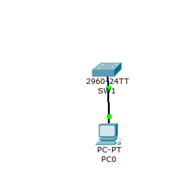
📋 Условие
- Коммутатор SW1. Порт f0/10 — доступ для клиента.
- Транк-порт Po1 — к реальному DHCP-серверу (trust).
- Включить Port Security на f0/10 (1 MAC, violation shutdown).
- Включить DHCP Snooping в VLAN 10, доверенный порт — только Po1.
🛠️ Решение
Шаг 0. Подготовка: проверьте, что Po1 (транк) реально собран и в статусе SU (show etherchannel summary). Убедитесь, что DHCP-сервер доступен. Войдите в режим конфигурации.
enable show etherchannel summary show ip interface brief configure terminal
Шаг 1. Включить DHCP Snooping глобально и в VLAN:
ip dhcp snooping ip dhcp snooping vlan 10 no ip dhcp snooping information option
Шаг 2. Настроить доверенный порт (транк):
interface Port-channel 1 ip dhcp snooping trust
Шаг 3. Включить Port Security на порту клиента:
interface f0/10 switchport mode access switchport access vlan 10 switchport port-security switchport port-security maximum 1 switchport port-security mac-address sticky switchport port-security violation shutdown
Порядок важен: сначала убедитесь, что DHCP работает (клиент получает адрес), и только потом добавляйте защиты. Если включить Port Security до того, как клиент получил адрес через sticky, в binding попадёт не тот MAC — и при следующем подключении сработает violation.
✅ Проверка
Этап 0. Исходное состояние (до защит)
| Команда / действие | ✅ Должно быть | 📌 Если не так |
|---|---|---|
| Клиент в VLAN 10 получает адрес по DHCP | Адрес выдан сервером (не APIPA). | Не получает — чинить DHCP до включения snooping, иначе не поймёте, что сломалось |
show etherchannel summary | Po1 — SU, порты P. | Канал не собран — trust-порт в решении висит на несуществующем интерфейсе |
Этап 1. DHCP Snooping
| Команда / действие | ✅ Должно быть | 📌 Если не так |
|---|---|---|
show ip dhcp snooping | Po1 в статусе trust, f0/10 — untrusted. | Нет trust на Po1 — легитимные ответы DHCP дропаются |
show ip dhcp snooping binding | Записи MAC↔IP клиентов VLAN 10. | Пусто — клиенты не получают адреса |
| После включения snooping повторно запросить адрес на клиенте | Адрес выдаётся как прежде. | Перестал выдаваться — клиентский порт untrusted (это норма), но сервер недоступен: проверьте trust на Po1 и роут между свитчем и сервером |
| Тест «левого» DHCP: поднять второй сервер на untrusted-порту | Ответы дропаются, клиенты продолжают получать адреса только от легитимного сервера. | Клиенты получают адреса от двух серверов / от чужого — snooping не работает |
Этап 2. Port Security
| Команда / действие | ✅ Должно быть | 📌 Если не так |
|---|---|---|
show port-security interface f0/10 | Статус Secure-up, maximum 1. | err-disabled — сработал violation (shutdown) |
show port-security address | MAC ПК закреплён за f0/10. | Чужой MAC в таблице |
show port-security (общий) | Все защищённые порты перечислены, Violation — Shutdown. | Порты, куда вы забыли добавить switchport port-security, в списке отсутствуют |
| Тест смены MAC: смените MAC на ПК (в PT — в настройках устройства) | Порт сразу уходит в err-disabled, свитч пишет в лог «Security violation». | Нет реакции — port-security не включён на порту (или maximum больше 1) |
Восстановление после violation: interface f0/10 → shutdown → no shutdown | Порт снова Secure-up, клиент снова работает. | Порт так и остался в err-disable — без ручного shutdown/no shutdown он сам не поднимется |
no ip dhcp snooping information option— в реальных сетях нужно, когда между клиентом и сервером стоит ещё один свитч, добавляющий Option 82 (в PT часто нужен, иначе сервер не принимает запросы). Но это компромисс по безопасности: в проде лучше правильно настроить trust-цепочку, а не отключать опцию.- Violation
shutdown— самый безопасный режим для офисных портов, но требует ручного восстановления. Для лабы это наглядно; в проде часто ставятrestrictс логированием. - Если в PT несколько ПК на одном порту (через мини-свитч), maximum 1 их убьёт — выставляйте maximum по числу устройств за портом.
💡 Аналогия: Port Security — это как вахтёр, который пускает в здание только тех, кого знает в лицо (MAC). DHCP Snooping — это как проверка паспорта у «почтальона» (DHCP-сервера): письма с непроверенным адресом не принимаются.
10. DHCP (Автоматизация выдачи адресов)
Задача: Настроить DHCP-сервер на L3-коммутаторе для выдачи адресов клиентам в VLAN 10 и VLAN 20. Ручная выдача IP не масштабируется; DHCP + excluded-address = предсказуемость.
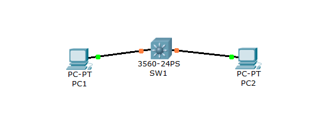
📋 Условие
- SW1 (L3-коммутатор) с VLAN 10 (192.168.10.0/24) и VLAN 20 (192.168.20.0/24).
- Шлюзы: .254 в каждом VLAN (SVI).
- Исключить из выдачи адреса шлюзов и серверов (.1–.10).
- Клиенты должны получать IP, маску, шлюз и DNS (8.8.8.8).
🛠️ Решение
Шаг 0. Подготовка: проверьте, что SVI VLAN 10 и VLAN 20 уже созданы и в статусе up/up (show ip interface brief). Если нет — создайте их до настройки пулов. Войдите в режим конфигурации.
enable show ip interface brief show vlan brief configure terminal
Шаг 1. Создать SVI и включить маршрутизацию:
ip routing interface Vlan10 ip address 192.168.10.254 255.255.255.0 no shutdown interface Vlan20 ip address 192.168.20.254 255.255.255.0 no shutdown
Шаг 2. Исключить адреса и создать пулы:
ip dhcp excluded-address 192.168.10.1 192.168.10.10 ip dhcp excluded-address 192.168.20.1 192.168.20.10 ip dhcp pool VLAN10 network 192.168.10.0 255.255.255.0 default-router 192.168.10.254 dns-server 8.8.8.8 ip dhcp pool VLAN20 network 192.168.20.0 255.255.255.0 default-router 192.168.20.254 dns-server 8.8.8.8
✅ Проверка
Этап 0. Каркас: SVI и маршрутизация
| Команда / действие | ✅ Должно быть | 📌 Если не так |
|---|---|---|
show ip interface brief | include Vlan | SVI Vlan10/Vlan20 в состоянии up/up. | SVI down — нет активных портов в VLAN |
show run | include ip routing | Строка ip routing присутствует. | Нет — L3-коммутатор работает как обычный свитч, маршрутизации между VLAN не будет |
ping 192.168.10.254 с ПК в VLAN 10 (до настройки DHCP) | Ответ шлюза. | Не отвечает — сначала чинить L2/access-порты, а не DHCP |
Этап 1. Выдача адресов
| Команда / действие | ✅ Должно быть | 📌 Если не так |
|---|---|---|
| На ПК в VLAN 10 выбрать «DHCP» | IP из диапазона 192.168.10.11–253. | APIPA 169.254.x.x — DHCP недоступен |
| На ПК в VLAN 20 выбрать «DHCP» | IP из 192.168.20.11–253 (не из пула VLAN 10!). | Адрес из чужой сети — ПК физически подключён не в тот VLAN (access-порт) |
ipconfig /all на ПК (в PT: Details → свой адрес) | IP, маска /24, шлюз .254, DNS 8.8.8.8 — все поля заполнены. | Пустой шлюз — забыли default-router в пуле; пустой DNS — забыли dns-server |
show ip dhcp binding | Выданные адреса и MAC-адреса клиентов. | Пусто — пул / SVI сломаны |
show ip dhcp pool | Пулы VLAN10/VLAN20, статистика, шлюз .254. | Забыли default-router / excluded-address |
| Проверка excluded: выданные адреса не в диапазоне .1–.10 | Все адреса клиентов ≥ .11, шлюзы .254 свободны. | Кто-то получил .1–.10 — excluded-address не применился (введён после выдачи адреса; верните адрес: clear ip dhcp binding * и повторно запросите DHCP) |
Этап 2. Сквозная связь между VLAN
| Команда / действие | ✅ Должно быть | 📌 Если не так |
|---|---|---|
ping 192.168.20.254 с ПК VLAN 10 | Успешно (маршрутизация между VLAN). | Не проходит — нет ip routing |
ping 192.168.20.X (адрес клиента в VLAN 20) с ПК VLAN 10 | Успешно. | Не проходит при работающем пинге шлюза — на клиенте VLAN 20 не прописан шлюз (после DHCP он должен появиться автоматически) |
- В Packet Tracer клиенты не «перезапрашивают» адрес после правок пула. Если пул меняли после выдачи — на ПК нажмите Static/DHCP переключателем или используйте
clear ip dhcp binding *на свитче, чтобы перераздать. - Один пул на один VLAN: если клиенты разных VLAN получают адреса из одного диапазона — вероятно, оба access-порта в одном VLAN (проверьте
show vlan brief).
💡 Аналогия: DHCP — это как администратор гостиницы, который выдаёт гостям (ПК) ключи от номеров (IP). Гость говорит «хочу номер» (Discover), администратор предлагает варианты (Offer), гость выбирает (Request), администратор подтверждает (Ack).
11. NAT/PAT (Выход в интернет) + ACL
Задача: Настроить PAT (Overload) на граничном роутере, чтобы все клиенты внутренней сети выходили в интернет под одним внешним IP. Частные адреса (RFC1918) не маршрутизируются в интернете — нужен выход под одним публичным IP. Дополнительно — ограничить исходящий трафик ACL (политика выхода) и защитить проброс порта входящим ACL на внешнем интерфейсе.
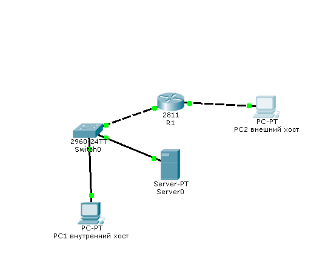
📋 Условие
- R1: f0/0 — внутренний (192.168.10.0/24), f0/1 — внешний (10.0.0.2/30, к ISP).
- Внутренняя сеть 192.168.10.0/24.
- Все клиенты должны выходить в интернет под IP 10.0.0.2.
- Сервер 192.168.10.10 должен быть доступен извне (Static NAT, порт 80) и способен сам инициировать TCP-сессии наружу.
- ACL1 (политика выхода): сервер 192.168.10.10 — весь трафик наружу; PC1 (192.168.10.11) — только ICMP.
- ACL3 (защита проброса): извне разрешены только HTTP к 10.0.0.2:80, ICMP для диагностики и ответный трафик уже установленных сессий; всё остальное — запрещено.
🛠️ Решение
Шаг 0. Подготовка: проверьте, что интерфейсы f0/0 и f0/1 в статусе up/up. Убедитесь, что внутренняя сеть 192.168.10.0/24 реально доступна (пинг с R1 до ПК). Войдите в режим конфигурации.
enable show ip interface brief configure terminal ! Чтобы не завешивать консоль при ошибках команд no ip domain-lookup ! Внутренний интерфейс в сторону LAN interface fastEthernet 0/0 description LAN -> 192.168.10.0/24 ip address 192.168.10.1 255.255.255.0 no shutdown exit ! Внешний интерфейс в сторону ISP interface fastEthernet 0/1 description WAN -> ISP ip address 10.0.0.2 255.255.255.252 no shutdown exit ! Маршрут по умолчанию: NAT превращает адреса, но сам не даёт путь наружу ip route 0.0.0.0 0.0.0.0 10.0.0.1 ! Проверка связности (префикс do — из режима конфигурации) do ping 192.168.10.11 do show ip interface brief
Шаг 1. Пометить интерфейсы inside/outside:
interface f0/0 ip nat inside exit interface f0/1 ip nat outside exit
Шаг 2. Создать ACL для NAT и включить PAT: без ACL команда трансляции ссылается в пустоту и IOS молча не транслирует ни один пакет — таблица будет пустой без всякой ошибки. После включения PAT очистите таблицу трансляций — в Packet Tracer старые записи могут «залипать» и мешать новым сессиям.
ip access-list extended NAT permit ip 192.168.10.0 0.0.0.255 any exit ip nat inside source list NAT interface f0/1 overload do clear ip nat translation *
Шаг 3. Static NAT для сервера (проброс порта):
ip nat inside source static tcp 192.168.10.10 80 10.0.0.2 80
Шаг 4. ACL1 — политика выхода из внутренней сети: серверу разрешаем всё, PC1 — только ICMP. Вешаем на f0/0 inbound: для роутера трафик «наружу из LAN» приходит на внутренний интерфейс. Ответный трафик NAT-сессий ACL1 не заденет — он приходит на f0/1.
ip access-list extended ACL1 permit ip host 192.168.10.10 any permit icmp host 192.168.10.11 any ! неявный deny ip any any в конце exit interface fastEthernet 0/0 ip access-group ACL1 in exit
Шаг 5. ACL3 — фильтр на внешнем интерфейсе, защищающий проброс: разрешаем HTTP к публичному адресу 10.0.0.2:80, ICMP и ответный трафик установленных сессий (строка established — пакеты без флага SYN, то есть ответы уже открытых сессий; без неё сервер с политикой ACL1 «всё наружу» не сможет инициировать TCP: SYN уйдёт, а SYN-ACK отрежет ACL3). Важно: входящий ACL на outside-интерфейсе видит пакет до трансляции, поэтому адрес — публичный 10.0.0.2, а не 192.168.10.10. Сам static NAT в ACL не нуждается.
ip access-list extended ACL3 permit tcp host 10.0.0.1 host 10.0.0.2 eq 80 permit icmp host 10.0.0.1 host 10.0.0.2 permit tcp host 10.0.0.1 host 10.0.0.2 established ! неявный deny ip any any в конце exit interface fastEthernet 0/1 ip access-group ACL3 in exit end
Шаг 6. Сохранить конфиг: без этого всё сотрётся при перезагрузке роутера.
write memory
Примечание про нумерацию: ACL1 и ACL3 здесь — именованные extended ACL (в PT работают). Нумерованные списки с номерами 1 и 3 в IOS — стандартные (1–99); расширенные нумерованные начинаются со 100. Если методичка требует номера — замените на 100 и 103.
✅ Проверка
Команды выполняются из привилегированного режима Router# (после end или Ctrl+Z).
Этап 0. Базовая связность
| Команда / действие | ✅ Должно быть | 📌 Если не так |
|---|---|---|
show ip interface brief | f0/0 и f0/1 up/up, IP на месте. | down/down — кабель; administratively down — no shutdown |
ping 192.168.10.11 с R1 | Ответ ПК. | Не пингуется — сначала L2/L3, потом NAT. Также проверьте Default Gateway на ПК |
show ip route | Есть connected-сети и маршрут по умолчанию (или BGP из задачи 7). | Нет дефолта — пакет после NAT уйдёт в никуда |
Этап 1. Метки интерфейсов и ACL
| Команда / действие | ✅ Должно быть | 📌 Если не так |
|---|---|---|
show ip nat statistics | Inside: f0/0, Outside: f0/1. | Inside/outside перепутаны — NAT будет работать не в ту сторону |
show access-lists NAT | permit ip 192.168.10.0 0.0.0.255 any. | Пусто — ACL не создан, NAT молча не работает: введите блок Шага 2 |
Этап 2. Трансляция и выход
| Команда / действие | ✅ Должно быть | 📌 Если не так |
|---|---|---|
ping 10.0.0.1 с PC1, затем show ip nat translations | Запись icmp: внутренний IP ПК → 10.0.0.2. Для ICMP «порт» — идентификатор запроса. | Пусто — ACL не создан или трафик режется ACL1; запись есть, а пинг не идёт — удалите и заново введите правило overload, затем clear ip nat translation * |
show ip nat statistics | Счётчик hits растёт, inside f0/0, outside f0/1. | Hits = 0 — трафик не попадает под ACL |
show ip nat translations verbose | Интерфейсы входа/выхода, таймер записи. | Записи не в том направлении |
show access-lists NAT | Match counter растёт. | Matches = 0 — permit не покрывает сеть 192.168.10.0/24, проверьте wildcard-маску |
telnet 10.0.0.2 80 с внешнего хоста | Попали на сервер 192.168.10.10 (Static NAT). | Соединение сброшено — нет static NAT-записи |
Этап 3. ACL-политики
| Команда / действие | ✅ Должно быть | 📌 Если не так |
|---|---|---|
ping 10.0.0.1 с PC1 | Ответы — ICMP под ACL1 разрешён. | Не пингуется — проверьте permit icmp в ACL1 и наличие ACL NAT |
Браузер PC1: http://10.0.0.2 | Не открывается — ACL1 отсекает не-ICMP трафик PC1 (это ожидаемое поведение). | Открывается — политика выхода не работает, проверьте ip access-group ACL1 in на f0/0 |
ping 10.0.0.1 с сервера | Ответы — сервер выпущен наружу. | Не пингуется — проверьте permit ip host 192.168.10.10 any в ACL1 |
Браузер PC2: http://10.0.0.2 | Страница Packet Tracer открывается. | Request Timeout — проверьте ACL3, static NAT и шлюз на сервере |
telnet 10.0.0.2 23 с PC2 | Отказ — ACL3 пускает только порт 80, ICMP и established (SYN под него не попадает). | Залогинился — ACL3 не применён к f0/1 |
show access-lists ACL1 / show access-lists ACL3 | Счётчики matches растут по нужным permit-строкам. | Matches = 0 — трафик не попадает под строки, проверьте hosts и маски |
💡 Аналогия: PAT — это как вахтёр на проходной завода: все сотрудники выходят через одну дверь (внешний IP), но у каждого свой номерок (source port), чтобы вернуться обратно. Static NAT — это отдельный вход для гостей: если курьер приходит с улицы, его ведут в конкретный кабинет (сервер). ACL1 — это же вахтёр, но проверяющий, кого выпускают: у сервера — все двери открыты, у PC1 — только калитка для звонков (ICMP). ACL3 — охрана у входа для гостей: пускают лишь к конкретной двери кабинета (порт 80), дают постучать для проверки связи (ICMP) и пропускают обратно тех, кто уже вышел (established).
В Packet Tracer при одновременной работе статического проброса порта и PAT на одном интерфейсе таблица трансляций может «залипать» на повреждённых записях, что проявляется как Server Reset Connection в браузере или пропадающий пинг. Решение в эмуляторе: удалить и заново добавить правило overload — это пересобирает таблицу трансляций. Если проблема повторяется, альтернатива — ограничить ACL PAT хостами, не являющимися целевым сервером проброса. В реальном IOS такое сочетание работает без этих оговорок.
12. EIGRP + Redistribution
Задача: Настроить EIGRP между двумя роутерами и перераспределить маршруты между OSPF и EIGRP на граничном роутере. Это стык двух доменов маршрутизации (например, после слияния компаний или сегментации сети).
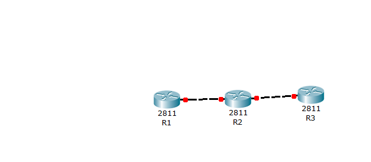
📋 Условие
- R1 (OSPF) — сеть 10.0.0.0/24.
- R2 (граничный) — связь с R1 по OSPF и с R3 по EIGRP.
- R3 (EIGRP) — сеть 20.0.0.0/24.
- Настроить OSPF AS 1 и EIGRP AS 100, перераспределить маршруты.
🛠️ Решение
Шаг 0. Подготовка: проверьте, что R1 и R2 видят друг друга по OSPF (show ip ospf neighbor — FULL), а R2 и R3 — по EIGRP (show ip eigrp neighbors — UP). Если соседство не поднято — redistribution не сработает. Войдите в режим конфигурации.
enable configure terminal show ip ospf neighbor show ip eigrp neighbors
Шаг 1. Настроить R1 (OSPF):
router ospf 1 network 10.0.0.0 0.0.0.255 area 0
Шаг 2. Настроить R3 (EIGRP):
router eigrp 100 network 20.0.0.0 0.0.0.255 no auto-summary
Шаг 3. Настроить R2 (граничный, redistribution):
router ospf 1 network 10.0.0.0 0.0.0.255 area 0 redistribute eigrp 100 subnets router eigrp 100 network 20.0.0.0 0.0.0.255 no auto-summary redistribute ospf 1 metric 10000 100 255 1 1500
Почему нет петли: внешние маршруты имеют худший тип, чем внутренние (O E2 / D EX), поэтому они не перебивают «родные» маршруты протокола. Плюс внешние EIGRP имеют AD 170 — это выше, чем у внутренних EIGRP (90) и OSPF (110). При одной точке redistribution этого достаточно. При двух точках (например, R2 и R3 тоже делают mutual redistribution) иерархия типов уже не спасает — нужен route-map с ручным set tag и deny для чужих тегов.
✅ Проверка
Этап 0. Соседство
| Команда / действие | ✅ Должно быть | 📌 Если не так |
|---|---|---|
show ip ospf neighbor на R2 | Сосед (R1) в статусе FULL. | Соседства нет — OSPF не настроен или интерфейс не в процессе |
show ip eigrp neighbors на R2 | Сосед (R3) в статусе UP. | Соседства нет — EIGRP не настроен или AS не совпадает |
Этап 1. Перераспределение
| Команда / действие | ✅ Должно быть | 📌 Если не так |
|---|---|---|
show ip route на R2 | Маршруты OSPF (O) и EIGRP (D), а также внешние (O E2, D EX). | Нет внешних меток — redistribution не работает |
show ip route 20.0.0.0 на R1 | Метка O E2 — перераспределён из EIGRP. | Маршрута нет — забыли seed-метрику |
show ip route 10.0.0.0 на R3 | Метка D EX — перераспределён из OSPF. | Маршрута нет — нет redistribute ospf |
show ip eigrp neighbors | Сосед UP, Q count 0. | Down — mismatch AS-номеров, passive-interface |
show ip protocols | В секции redistribution указаны оба протокола. | Нет строки redistribution — редистрибуция не настроена |
💡 Аналогия: Redistribution — это как перевод валюты: OSPF «считает» маршруты в одной валюте (cost), EIGRP — в другой (bandwidth + delay). Команда redistribute с metric говорит: «когда переводишь, вот тебе курс» (5 параметров метрики). Без курса EIGRP не примет маршрут — не знает, сколько он «стоит».
13. MSTP (Multiple Spanning Tree Protocol)
Задача: Настроить MSTP с двумя инстансами (для разных групп VLAN) и балансировкой нагрузки между двумя корневыми коммутаторами. Один экземпляр STP на все VLAN даст простой части сети, а MSTP даёт балансировку по группам VLAN.
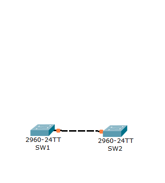
📋 Условие
- SW1 и SW2 — корневые для разных групп VLAN.
- Instance 1 — VLAN 100, 102, 104. Instance 2 — VLAN 105, 106, 107, 108.
- На SW1: Instance 1 — root primary, Instance 2 — root secondary.
- На SW2: Instance 2 — root primary, Instance 1 — root secondary.
- VLAN 1 (общий) — корень на SW1, резерв — на SW2.
🛠️ Решение
Шаг 0. Подготовка: проверьте, что все свитчи в одном режиме STP (show spanning-tree summary). Убедитесь, что имена регионов и ревизии совпадут (это критично для MSTP: если регион разный — свитчи не «увидят» друг друга). Войдите в режим конфигурации.
enable configure terminal show spanning-tree summary show spanning-tree mst configuration
Шаг 1. Включить MSTP и создать регион на обоих коммутаторах:
spanning-tree mode mst spanning-tree mst configuration name LAB revision 1 instance 1 vlan 100,102,104 instance 2 vlan 105,106,107,108 exit
Шаг 2. Настроить корневые мосты на SW1:
spanning-tree mst 1 root primary spanning-tree mst 2 root secondary
Шаг 3. Настроить корневые мосты на SW2:
spanning-tree mst 1 root secondary spanning-tree mst 2 root primary
✅ Проверка
Этап 0. Регион и режим
| Команда / действие | ✅ Должно быть | 📌 Если не так |
|---|---|---|
show spanning-tree summary | Режим mst на обоих свитчах. | Разные режимы — MSTP не сойдётся |
show spanning-tree mst configuration | Имя LAB, revision 1, mapping инстансов (VLAN 100, 102, 104 → 1; 105–108 → 2). | Mismatch name/revision/mapping — свитчи в разных регионах, деревья не сойдутся |
Этап 1. Корневые мосты
| Команда / действие | ✅ Должно быть | 📌 Если не так |
|---|---|---|
show spanning-tree mst 1 на SW1 | «This bridge is the root». | Корень в другом месте — приоритет или регион |
show spanning-tree mst 2 на SW2 | Root для instance 2 (на SW1 — нет). | Оба primary — корень выберется по MAC, балансировки нет |
show spanning-tree vlan 1 | На SW1 «This bridge is the root», на SW2 Root ID указывает на MAC SW1. | VLAN не замаплен ни в один инстанс |
💡 Аналогия: MSTP — это как несколько параллельных дорог для разных видов транспорта (инстансов). Грузовики (Instance 1) едут через один мост, легковые (Instance 2) — через другой. root primary на SW1 для Instance 1 = «грузовики едут через SW1». root secondary = «если мост SW1 закрыт, грузовики едут через резервный (SW2)». Так трафик распределяется, а не идёт весь через один свитч. Важно: у каждого инстанса корень ровно один — если оба свитча «primary», STP выберет корень по MAC, и балансировки не будет.
14. NTP (Синхронизация времени)
Задача: Настроить синхронизацию времени между сетевыми устройствами, чтобы логи и сертификаты работали корректно. Без синхронизации времени логи разных устройств не сопоставить, а сертификаты/DHCP-lease ломаются.
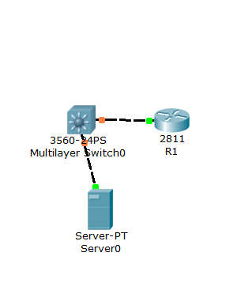
📋 Условие
- R1 — NTP-сервер (источник времени).
- SW1 — NTP-клиент (синхронизируется с R1).
- Часовой пояс — Москва (UTC+3).
🛠️ Решение
Шаг 0. Подготовка: проверьте, что R1 и SW1 видят друг друга (пинг). Убедитесь, что на SW1 нет локально настроенного времени, которое конфликтует с NTP (если есть — сбросьте: clock set). Войдите в режим конфигурации.
enable configure terminal ping 192.168.1.5 show clock
Шаг 1. Настроить R1 как NTP-сервер:
clock timezone MSK 3 0 ntp master 1
Шаг 2. Настроить SW1 как NTP-клиент:
clock timezone MSK 3 0 ntp server 192.168.1.5
✅ Проверка
Этап 0. Базовая связность
| Команда / действие | ✅ Должно быть | 📌 Если не так |
|---|---|---|
ping 192.168.1.5 с SW1 | Успешно. | Не пингуется — NTP не поднимется |
show clock на обоих | Время может быть разным до синхронизации. | Время радикально расходится — нормально, NTP его исправит |
Этап 1. Синхронизация
| Команда / действие | ✅ Должно быть | 📌 Если не так |
|---|---|---|
show ntp status на SW1 | Статус synchronized. | unsynchronized — нет ответа сервера |
show ntp associations | Сервер 192.168.1.5 в статусе * (выбран). | Нет звёздочки — peer не выбран |
show clock на SW1 и R1 | Время совпадает (с точностью до секунды). | Расхождение — синхронизация не прошла |
show running-config | include ntp | ntp server 192.168.1.5 на SW1, ntp master 1 на R1. | Неверный IP сервера / нет ntp master |
💡 Аналогия: NTP — это как служба точного времени: все часы в офисе синхронизируются с одними «главными» часами (NTP-сервер). Без этого логи разных устройств невозможно сопоставить (одни пишут 12:00, другие 12:05), а сертификаты могут «не работать» из-за расхождения времени.
15. WLC/AP (Беспроводной сегмент)
Задача: Настроить беспроводную сеть с контроллером (WLC) и точкой доступа (AP), чтобы клиенты подключались по Wi-Fi. Это централизованное управление Wi-Fi: один SSID и одна политика безопасности на сотни AP.

📋 Условие
- WLC — контроллер (management IP 192.168.1.100).
- AP — точка доступа, подключена к SW1.
- SSID: Corp-WiFi. Шифрование: WPA2-PSK (AES).
- Клиенты получают IP из VLAN 10 (через DHCP).
🛠️ Решение
Шаг 0. Подготовка: проверьте, что WLC подключён к сети и доступен по management IP (ping 192.168.1.100). Убедитесь, что AP физически подключён к SW1 и порт в trunk-режиме. Войдите в WLC через GUI (браузер) или CLI (SSH).
! На SW1 — проверить, что порт к WLC в trunk show interfaces status ! На WLC (через SSH/GUI) — проверить, что AP виден show ap summary
Шаг 1. Настроить WLC (через GUI или CLI):
! Настройка WLC (пример для Packet Tracer) ! В GUI: Wireless → WLANs → Create New → SSID: Corp-WiFi ! Security: WPA2-PSK (AES), пароль: MySecretPass ! Interface: VLAN 10 (192.168.10.1) ! Management IP: 192.168.1.100
Шаг 2. Подключить AP к SW1:
interface f0/15 switchport mode trunk switchport trunk native vlan 1 switchport trunk allowed vlan 1,10
Шаг 3. Настроить AP (в Packet Tracer):
! На AP: Config → Wireless → SSID: Corp-WiFi ! Security: WPA2-PSK, пароль: MySecretPass ! Канал: 6 (2.4 GHz) или 36 (5 GHz)
✅ Проверка
Этап 0. Инфраструктура
| Команда / действие | ✅ Должно быть | 📌 Если не так |
|---|---|---|
ping 192.168.1.100 с ПК/роутера | WLC доступен. | Не пингуется — WLC не в сети |
show interfaces status на SW1 | Порт к WLC в trunk, allowed VLAN 1,10. | Порт access — CAPWAP не пройдёт |
Этап 1. AP и WLC
| Команда / действие | ✅ Должно быть | 📌 Если не так |
|---|---|---|
show wlan summary на WLC | SSID Corp-WiFi активен. | WLAN Disabled — неверная security или interface |
show ap summary на WLC | AP подключён (CAPWAP joined). | AP нет — Option 43/DNS, порт не trunk |
| Подключение к Corp-WiFi с ноутбука | Клиент ассоциируется, пароль принят. | Не подключается — WPA2-PSK mismatch |
ipconfig на ноутбуке | Получен IP из 192.168.10.0/24. | 169.254.x.x — нет DHCP |
ping 192.168.1.5 | Успешно. | Не проходит — VLAN/interface на WLAN |
💡 Аналогия: WLC — это как диспетчер такси, который управляет всеми машинами (AP): раздаёт заказы, следит за тарифами (SSID, WPA2), маршрутизирует поездки (VLAN). AP — это машины на улицах, а CAPWAP — это рация, по которой диспетчер говорит с водителями.
📊 Итог практикума
Все задачи охватывают технологии из Лабораторных 1 и 2. Каждая задача содержит условие, пошаговое решение и проверку.
📋 Что проверяется
| № | Технология | Ключевая команда |
|---|---|---|
| 1 | VLAN и Trunk | show vlan brief |
| 2 | EtherChannel LACP | show etherchannel summary |
| 3 | EtherChannel PAgP | show etherchannel summary |
| 4 | STP | show spanning-tree vlan 1 |
| 5 | OSPF | show ip ospf neighbor |
| 6 | HSRP | show standby brief |
| 7 | BGP | show ip bgp summary |
| 8 | IPv6/OSPFv3 | show ospfv3 neighbor |
| 9 | L2-безопасность | show port-security |
| 10 | DHCP | show ip dhcp binding |
| 11 | NAT/PAT | show ip nat translations |
| 12 | EIGRP/Redistribution | show ip route |
| 13 | MSTP | show spanning-tree mst 1 |
| 14 | NTP | show ntp status |
| 15 | WLC/AP | show wlan summary |
📝 Самопроверка: Лаба 1 (фундамент)
Вопросы на понимание, а не на заучивание. Сначала ответьте сами, потом раскройте ответ.
1. VLAN/Trunk: native VLAN слева 1, справа 10 Junior
Показать ответ
Tagged-кадры VLAN 10 пройдут нормально: тег 802.1Q сохраняется, свитчи смотрят на него и не трогают native VLAN. Untagged-кадры слева попадут в native VLAN 1, справа — в native VLAN 10. Это ошибка конфигурации: один и тот же untagged-трафик будет интерпретироваться по-разному. Правильно — сделать native VLAN одинаковым с обеих сторон (или отключить native VLAN на транке).
2. EtherChannel: почему трафик между двумя MAC идёт по одному линку Middle
Показать ответ
Работает хеш-функция (по умолчанию src-dst-mac, можно src-dst-ip или src-dst-port). Хеш даёт одинаковый результат для одной и той же пары MAC → все кадры этой пары идут по одному физическому линку. «По очереди» нельзя: это нарушит порядок кадров (out-of-order), что ломает TCP и вызывает ретрансмиссии.
3. Rapid-PVST+: почему RSTP быстрее классического STP Middle
Показать ответ
В RSTP порт-роли согласуются через proposal/agreement (BPDU с флагом proposal), а не через таймеры. Плюс есть edge-порты (PortFast) и Alternate/Backup — резервные порты уже знают о своей роли и готовы мгновенно стать Root. В классическом STP переход Listening → Learning → Forwarding занимает 30–50 секунд.
4. HSRP: кто отвечает на ARP и что такое split brain Middle
Показать ответ
На ARP «кто 192.168.1.254?» отвечает Active-роутер (R1) своим виртуальным MAC 0000.0c07.ac01. Standby молчит. Split brain — если R1 и R2 потеряли связь друг с другом (например, из-за L2-петли или ACL), оба могут считать себя Active и отвечать на ARP. Тогда клиенты получат два разных MAC для одного IP → непредсказуемая маршрутизация. Защита: выделенный линк между роутерами, BFD, трекинг аплинков.
5. NAT/PAT: как различаются ответы двум ПК Junior
Показать ответ
PAT меняет source IP + source port. Первому ПК назначается, например, 10.0.0.2:30001, второму — 10.0.0.2:30002. Ответы приходят на эти порты и по таблице трансляций разворачиваются обратно к нужному ПК. Если оба попытаются использовать одинаковый source port — конфликта не будет: PAT выдаст одному из них другой свободный порт.
6. DHCP: последовательность сообщений и несколько Offer Junior
Показать ответ
Последовательность DORA: Discover → Offer → Request → Ack. Клиент может получить несколько Offer (если в сети несколько DHCP-серверов). Он выбирает один, отправляет Request с указанием выбранного сервера, и остальные серверы отзывают свои предложения.
7. Port-Security: maximum 2, restrict vs shutdown Junior
Показать ответ
Если на порту уже ПК + IP-телефон (2 MAC), а вы ставите maximum 2 с violation restrict — всё работает, пока подключены те же 2 устройства. При третьем MAC: restrict дропает кадры с чужим MAC и пишет в лог (порт остаётся up), shutdown — переводит порт в err-disabled (нужен ручной shutdown/no shutdown).
8. Floating static route и AD Middle
Показать ответ
Резервный маршрут «всплывает», когда основной пропадает из RIB. AD — это «вес» источника маршрута: чем меньше, тем приоритетнее. Если два маршрута в одну сеть с одинаковой длиной префикса, в RIB ставится тот, у кого меньше AD. При равной AD — тот, у кого меньше метрика, а при равной метрике — балансировка (ECMP).
9. Почему STP не «убивает» сеть, если в ней есть кольцо Senior
Показать ответ
STP строит логическое дерево: выбирает один Root Bridge, для каждого сегмента — один Designated Port, для каждого не-корневого свитча — один Root Port. Все остальные порты, которые могли бы замкнуть кольцо, переводятся в Blocking/Alternate. Они не передают данные, но слушают BPDU. Если основной путь упадёт, Alternate станет Root и трафик пойдёт через него.
10. Что такое BPDU Guard и зачем он на порту с PortFast Senior
Показать ответ
PortFast переводит порт сразу в Forwarding, не дожидаясь STP. Но если к такому порту подключить свитч, он начнёт слать BPDU, и в сети может возникнуть петля (порт-то уже Forwarding). BPDU Guard слушает BPDU на PortFast-порту: если пришёл BPDU — порт уходит в err-disabled. Это защита от «случайно подключённого свитча».
11. Зачем нужен native VLAN и почему его меняют на «мусорный» Senior
Показать ответ
Native VLAN — это VLAN, трафик которого идёт по транку без тега. По умолчанию это VLAN 1. Меняют на «мусорный» (например, 999), потому что VLAN 1 часто используется для управления и легко атакуется через double-tagging (злоумышленник шлёт кадр с двумя тегами, внешний — native, внутренний — целевой). Если native VLAN отличается от пользовательских, атака не проходит.
12. Почему speed 100 и duplex full обязательны для LACP в PT 6.2 Junior
Показать ответ
LACP требует, чтобы все порты в канале имели одинаковые ключевые параметры (режим trunk/access, native VLAN, allowed VLAN). В Packet Tracer 6.2 автосогласование speed/duplex часто даёт разные значения на разных концах, и канал не собирается — поэтому speed 100 и duplex full приходится задавать явно. В реальной жизни LACP технически допускает разные скорости, но это плохая практика: балансировка становится неравномерной, и медленный линк становится «узким местом».
📝 Самопроверка: Лаба 2 (надстройка)
Вопросы уровня «понимание, а не зубрёжка». Сначала ответьте сами, потом раскройте.
1. OSPF: DR/BDR — зачем и где Junior
Показать ответ
DR/BDR выбираются на широковещательных (broadcast) и NBMA-сегментах, чтобы не создавать полную mesh-сеть соседства (N×(N−1)/2). На point-to-point DR/BDR не нужны, потому что там всего два участника. В Лабе 1 DR — SW1 (приоритет 200, задан явно). В Лабе 2 приоритет OSPF на интерфейсах явно не задан, поэтому DR выбирается по умолчанию (router-id / MAC). Если нужно, чтобы SW1 стал DR и в Лабе 2, стоит добавить ip ospf priority 200 на его интерфейсы.
2. OSPF: почему Area 1 не видит Area 0 без транзита Middle
Показать ответ
OSPF требует, чтобы все не-backbone зоны были подключены к Area 0 через ABR. Если Area 1 не имеет связи с Area 0, её маршруты не попадут в другие зоны (нет ABR). Если линк SW1–SW2 (транзит в Area 0) порвётся, Area 1 и Area 2 останутся изолированными от backbone: маршруты между ними пропадут, пока не восстановится связь или не появится virtual-link.
3. EIGRP: feasible successor и loop-free by design Middle
Показать ответ
Feasible Successor — резервный маршрут, у которого Reported Distance соседа меньше Feasible Distance текущего Successor (condition по feasible distance). Это гарантирует отсутствие петли: сосед не может «врать» о лучшем пути через нас. OSPF корректен по построению: алгоритм SPF на общей LSDB всегда даёт дерево без петель. Иерархия зон — это про масштабируемость и границы перерасчёта, а не про защиту от петель.
4. BGP: eBGP vs iBGP и next-hop-self Middle
Показать ответ
eBGP — между разными AS, передаёт маршруты всем соседям. iBGP — внутри одной AS, но маршруты не передаются следующему iBGP-соседу (split horizon). Поэтому нужен full-mesh или route reflector. next-hop-self — команда на iBGP-соседе, которая меняет next-hop на свой IP, чтобы остальные iBGP-соседи могли до него достучаться.
5. BGP: критерии выбора лучшего пути Middle
Показать ответ
Порядок: Weight (Cisco) → Local Preference → Locally Originated → AS-Path (короче = лучше) → Origin → MED → eBGP > iBGP → IGP metric. Если R1 получает один префикс от двух ISP, он выберет по этим критериям (чаще всего — по AS-Path или Local Preference).
6. Redistribution: одна точка vs две точки Senior
Показать ответ
Одна точка безопасна благодаря иерархии типов маршрутов внутри протокола: O > O IA > O E1/E2, а в EIGRP internal (D) > external (D EX). Внешние маршруты, вернувшиеся из другого протокола, не перебивают внутренние, потому что у них худший тип (O E2 / D EX). Плюс внешние EIGRP имеют AD 170. Две точки — классическая мина: маршрут может «гулять» между протоколами через две точки, и иерархия типов уже не спасает. Защита — route-map с ручным тегированием (set tag) и deny для чужих тегов.
7. WLC/AP: CAPWAP и local/remote switching Middle
Показать ответ
AP находит WLC через DHCP Option 43 или DNS-имя, затем устанавливает CAPWAP-туннель (UDP 5246/5247). По нему идут управляющие пакеты (SSID, безопасность) и, в зависимости от режима, данные. Local switching — данные уходят в локальный свитч (меньше нагрузка на WLC). Remote switching — данные туннелируются в WLC (централизованный контроль).
8. IPv6/OSPFv3: link-local и соседство Junior
Показать ответ
Link-local (fe80::/10) — адрес, который автоматически назначается на каждый IPv6-интерфейс и действует только в пределах линка. OSPFv3 использует его для соседства, потому что link-local всегда есть и не зависит от глобальных префиксов. Два роутера с несовпадающими глобальными префиксами могут стать OSPFv3-соседями, если они в одном link-local домене (на одном линке).
9. Зачем в OSPF нужен router-id и что будет, если он совпадёт у двух роутеров Senior
Показать ответ
Router-id — уникальный идентификатор OSPF-процесса (обычно IPv4-адрес). Если у двух роутеров он совпадёт, соседство не встанет (или будет нестабильным): OSPF не сможет различить LSDB-записи. Настройка: router-id X.X.X.X в процессе OSPF, либо автоматически выбирается по старшему loopback/IP.
10. Почему BGP не «находит» сети автоматически Senior
Показать ответ
BGP анонсирует только те сети, которые явно указаны в network или перелиты через redistribute. Если сеть есть в IGP, но не в network — BGP её не анонсирует. Это отличается от OSPF/EIGRP, где network просто включает интерфейсы в процесс, и протокол сам находит сети.
11. Что такое LSA Type 3 и Type 5, и кто их генерирует Senior
Показать ответ
Type 3 (Summary LSA) — генерирует ABR, чтобы рассказать одной зоне о сетях другой (межзональные маршруты, метка O IA). Type 5 (External LSA) — генерирует ASBR, чтобы рассказать о внешних сетях (перелитых из другого протокола, метка O E1/E2).
12. Почему в iBGP нужен full-mesh или route reflector Senior
Показать ответ
По правилу split horizon iBGP-маршрут, полученный от одного iBGP-соседа, не передаётся другому iBGP-соседу. Значит, чтобы все iBGP-роутеры видели все маршруты, они должны быть соединены полносвязно (full-mesh). Альтернатива — route reflector: специальный роутер, который «отражает» маршруты всем клиентам, снимая ограничение.
🌟 Вопрос на зрелость (senior)
Что бы вы сделали иначе, если бы проектировали эту сеть с нуля сегодня? Senior
Показать ответ
Нет правильного ответа — важно, как рассуждаете. Варианты: MST вместо PVST+ (меньше деревьев, меньше нагрузка на CPU); VRRP вместо HSRP (открытый стандарт, мультивендорность); EVPN/VXLAN вместо классического L2-домена; автоматизация (Ansible/Python вместо ручных конфигов); российские вендоры (Eltex, Qtech) — если есть требование импортозамещения; SD-WAN вместо классических WAN-линков.
Если помните, в Лабе 2 был баг с HSRP в Packet Tracer 6.2: SW1 (транзитный L3-свитч) не мог отправить пакет на виртуальный MAC-адрес HSRP, потому что PT 6.2 криво обрабатывает ARP для виртуальных MAC. Из-за этого трафик от SW1 к R1 «застревал». Мы тогда прописали на SW1 прямой статический маршрут на физический IP R1: ip route 0.0.0.0 0.0.0.0 192.168.1.5. Это обошло баг: SW1 перестал отправлять пакеты на виртуальный MAC и слал их напрямую на физический интерфейс R1. Именно поэтому в задаче 6 (HSRP) в блоке «Аналогия» и в самопроверке упоминается этот случай — это реальное инженерное решение, а не учебная абстракция. И это как раз тот случай, который стоит рассказывать на собеседовании, когда спросят «а что было самым сложным?».
📊 Ваш прогресс
0 из 15 задач решено
🛠️ Траблшутинг: настоящая работа
1. ПК не получает IP по DHCP — порядок проверки Junior
Показать ответ
От клиента к серверу: ipconfig /renew → show ip dhcp snooping (trust на транке) → show ip dhcp binding (есть ли выдачи) → show ip interface brief (SVI up/up) → show vlan brief (порт в нужном VLAN). Чаще всего причина — отсутствие trust на транке или SVI down.
2. OSPF-соседство есть, трафик не ходит Middle
Показать ответ
Три команды: show ip route <сеть> (куда смотрит маршрут), show ip ospf database (есть ли LSA), traceroute <IP> (где обрывается). Часто причина — ACL или NAT на пути.
3. Маршрут есть, а пинг не ходит — 4 причины Middle
Показать ответ
1) ACL блокирует ICMP. 2) NAT «съедает» пакеты. 3) Нет обратного маршрута на удалённой стороне. 4) Firewall/Zone-Based Policy. 5) Неверный next-hop (маршрут смотрит в никуда).
4. После ребута SW1 клиенты теряют связь на 3–4 минуты Middle
Показать ответ
Виноват STP: порт проходит Listening → Learning → Forwarding (30–50 секунд). Решение: spanning-tree portfast на портах к ПК (мгновенный Forwarding) + bpduguard (защита от подключения свитча к порту ПК). В RSTP резервный uplink подхватывается сам (Alternate → Root встроен в протокол).
5. Соседство OSPF «висит» в EXSTART/EXCHANGE — что проверять Senior
Показать ответ
Чаще всего — несовпадение MTU на интерфейсах. Проверить: show ip ospf neighbor (статус), show interface <int> (MTU с обеих сторон). Решение: выровнять MTU (например, ip mtu 1500).
6. BGP-сессия «висит» в Active/Idle — что проверять Senior
Показать ответ
Проверить: 1) есть ли IP-связность до neighbor (ping); 2) remote-as совпадает с обеих сторон; 3) TCP 179 не блокируется ACL; 4) update-source (если neighbor — loopback, нужен neighbor X update-source Loopback0); 5) ebgp-multihop (если eBGP через несколько хопов).
7. После включения Port-Security порт ушёл в err-disabled — что делать Senior
Показать ответ
Причина: превышен maximum MAC, или подключено чужое устройство (violation). Решение: shutdown → no shutdown на порту. Если нужно — увеличить maximum или очистить sticky: clear port-security sticky interface f0/10. Проверить: show port-security interface f0/10, show port-security address.
🎤 Вопросы с собеседований (разбор)
Реальные вопросы, которые задают на интервью по темам Лаб 1–2. Сначала ответьте сами, потом раскройте.
STP: SW1 и SW2 — корни для разных VLAN. Каким способом это достигнуто? Middle
Показать ответ
Через spanning-tree vlan ... root primary на одном свитче и root secondary на другом для разных групп VLAN. Если бы оба были root primary для всех VLAN, корень выбирался бы по Bridge ID (priority + MAC): один свитч стал бы корнем для всех VLAN, балансировки бы не было. Заблокированный порт уходит в Alternate (Altn BLK) — не передаёт данные, но слушает BPDU и готов стать Root при падении основного пути.
OSPF Multi-Area: какой LSA генерирует ABR, чтобы рассказать Area 0 про 192.168.5.0/24? Middle
Показать ответ
LSA Type 3 (Summary LSA). В таблице маршрутизации на SW2 этот маршрут выглядит как O IA (OSPF Inter-Area).
Redistribution: почему нет петли, хотя переливаем в обе стороны? Что значит метрика 10000 100 255 1 1500? Senior
Показать ответ
Петли нет благодаря иерархии типов маршрутов внутри протокола: O > O IA > O E1/E2, а в EIGRP internal (D) > external (D EX). Внешние маршруты, вернувшиеся из другого протокола, не перебивают внутренние, потому что у них худший тип. Плюс внешние EIGRP имеют AD 170. Метрика — это 5 параметров EIGRP: bandwidth (10000 Кбит/с = 10 Мбит/с), delay (100 × 10 мкс = 1 мс), reliability (255 = 100%), load (1 = минимальная), MTU (1500 байт).
BGP: что будет, если сеть 192.168.2.0/24 пропадёт из таблицы маршрутизации R1? Middle
Показать ответ
R1 перестанет анонсировать эту сеть соседям ISP. BGP анонсирует только те сети, которые есть в таблице маршрутизации. ISP получит BGP UPDATE с withdrawn route и удалит маршрут из своей таблицы.
HSRP: почему без preempt у R2 не хватило бы? Что будет, если preempt у обоих? Middle
Показать ответ
preempt — это разрешение отбирать роль Active у текущего Active, если твой приоритет выше. Если у R1 нет preempt, то после возврата R1 (приоритет 150) он не сможет отобрать роль у R2 (приоритет 100) — R1 останется Standby. Если preempt у обоих — R1 после возврата отберёт роль Active (150 > 100). Виртуальный MAC HSRP: 0000.0c07.acXX (XX — номер группы в hex).
NAT: что будет с узлом 192.168.9.5 при ACL permit ip 192.168.0.0 0.0.255.255 any? Почему видны записи icmp, если NAT — это PAT? Middle
Показать ответ
192.168.9.5 попадёт под ACL: wildcard 0.0.255.255 — это /16, то есть любой 192.168.X.X. Записи icmp видны потому, что PAT (Overload) — это разновидность NAT, которая транслирует все протоколы, не только TCP/UDP. Для ICMP «порт» — это идентификатор ICMP-запроса, и PAT меняет его так же, как source port.
EtherChannel: почему LACP и PAgP не смешиваются? Почему active + auto не соберётся? Middle
Показать ответ
LACP и PAgP — разные протоколы согласования. Они не понимают друг друга: если на одном конце LACP, а на другом PAgP, канал не соберётся. active (LACP) отправляет LACPDU, а auto (PAgP) ждёт PAgP-пакеты — они несовместимы. Для LACP нужны active + active или active + passive. Для PAgP — desirable + desirable или desirable + auto.
L2-безопасность: почему транк Po2 объявлен доверенным, а не «все порты»? Что сломается, если Fa0/10 trusted? Senior
Показать ответ
DHCP Snooping пропускает DHCP-ответы только с trusted-портов. Если сделать все порты trusted, то любой «левый» DHCP-сервер, подключённый к порту ПК, сможет выдать клиентам адреса и шлюз (MITM-атака). Доверенным должен быть только порт к реальному DHCP-серверу (Po2 к SW00). Если Fa0/10 trusted — злоумышленник, подключившись к нему, сможет поднять свой DHCP-сервер, и DHCP Snooping не защитит.
IPv6+OSPFv3: почему ipv6 ospf 1 area 0 на интерфейсе, а router ospf не главный? Senior
Показать ответ
В OSPFv2 команды network задают, какие интерфейсы включить в процесс. В OSPFv3 network-команд нет — интерфейсы включаются напрямую через ipv6 ospf 1 area 0. Это сделано потому, что OSPFv3 использует link-local адреса для соседства, и «привязка» к IP-сети (как в v2) не имеет смысла.
STP и LACP вместе: что будет, если один линк в Po1 «зависнет» (дропает кадры)? Senior
Показать ответ
LACP не заметит сразу: он проверяет только физическую связь и факт получения LACPDU. Если порт «висит» и дропает кадры, но LACPDU проходят — LACP будет считать канал живым. STP тоже не сразу заметит: BPDU могут проходить, а данные — дропаться. Решение: UDLD (UniDirectional Link Detection) — он как раз для обнаружения односторонних линков, плюс show interface (CRC, input errors) и SPAN для диагностики.
OSPF и MTU: почему соседство «висит» в EXSTART при разном MTU? Senior
Показать ответ
В состоянии EXSTART роутеры договариваются, кто будет Master, и обмениваются DBD-пакетами (Database Description). Если MTU на интерфейсах не совпадает, больший DBD-пакет не проходит через линк с меньшим MTU — соседство «залипает» в EXSTART/EXCHANGE. Решение: выровнять MTU (например, ip mtu 1500) на обоих интерфейсах. Это классическая ошибка при OSPF over GRE/IPsec.
HSRP и трекинг: как сделать, чтобы при падении аплинка на R1 роль Active автоматически перешла к R2? Senior
Показать ответ
Через HSRP Tracking: standby 1 track FastEthernet0/1 50 на R1. Если аплинк (f0/1) упадёт, приоритет R1 снизится на 50 (150 → 100), и R2 (100) станет Active. Без трекинга R1 останется Active, хотя у него нет выхода в интернет — клиенты будут «висеть» без связи.
BGP и next-hop-self: почему в iBGP нужен next-hop-self? Senior
Показать ответ
В iBGP маршрут, полученный от eBGP-соседа, сохраняет next-hop eBGP-соседа. Но другие iBGP-роутеры могут не иметь маршрута до этого next-hop (он за пределами их IGP). next-hop-self меняет next-hop на свой IP, чтобы остальные iBGP-соседи могли достучаться. Без него маршрут будет в таблице BGP, но не установится в RIB (next-hop unreachable).
Redistribution и route-map: как защититься от петли при двух точках redistribution? Senior
Показать ответ
Через ручное тегирование: при переливе OSPF → EIGRP ставить set tag 100, при EIGRP → OSPF — set tag 200. На каждом redistribute добавлять deny для маршрутов с «чужим» тегом. Тогда маршрут, вернувшийся из другого протокола, будет отброшен по тегу. «Положиться на AD» не работает: при двух точках маршрут может «гулять» между протоколами.
VLAN vs Subnet: в чём разница? (и почему VLAN — не про безопасность) Junior
Показать ответ
VLAN — это L2-конструкция (broadcast-домен, теги 802.1Q, trunk, access-порты). Subnet — это L3-конструкция (маршрутизация, таблица маршрутов). VLAN сам по себе не безопасность: трафик между VLAN можно маршрутизировать, если есть SVI или роутер. Изоляция появляется только когда вы не разрешаете маршрутизацию между ними (ACL).
Что происходит, когда свитч только загрузился? (MAC-таблица пуста) Junior
Показать ответ
Свитч начинает с пустой MAC-таблицы. Первый кадр с неизвестным destination MAC он флудит во все порты (кроме входящего). Потом учится по source MAC. Флудит он только в пределах своего VLAN. В кольце такой флудинг и создаёт петлю — поэтому нужен STP.
BGP: чем eBGP отличается от iBGP? Middle
Показать ответ
eBGP — между разными AS (стык с провайдером). iBGP — внутри одной AS (между граничными роутерами). Главные отличия: 1) Split horizon: в iBGP маршрут, полученный от одного iBGP-соседа, не передаётся другому (нужен full-mesh или route reflector). В eBGP — передаётся. 2) Next-hop: в eBGP меняется на IP соседа, в iBGP — сохраняется (нужен next-hop-self). 3) TTL: в eBGP — 1 (соседи напрямую), в iBGP — 255 (можно через хопы). 4) Local Preference: в eBGP по умолчанию не передаётся, в iBGP передаётся.
⚡ Блиц: 20 вопросов на скорость
Короткие вопросы — ответы в одну строку. Цель: отвечать за 3–5 секунд. Если задумались дольше — вернитесь к соответствующему блоку самопроверки.
1. Какой VLAN по умолчанию является native на транке? Junior
Ответ
VLAN 1.
2. Сколько VLAN можно теоретически создать в 802.1Q? Junior
Ответ
До 4094 (VLAN ID 1–4094).
3. Какой командой проверить, собран ли EtherChannel? Junior
Ответ
show etherchannel summary — искать статус SU и флаг P на портах.
4. Какая команда показывает корневой мост STP? Junior
Ответ
show spanning-tree vlan 1 — искать «This bridge is the root» (или Root ID с MAC корня).
5. Что такое BPDU? Junior
Ответ
Служебный кадр STP, которым коммутаторы обмениваются для построения дерева (приоритет, MAC, стоимость пути).
6. Какой протокол агрегации — открытый стандарт: LACP или PAgP? Junior
Ответ
LACP (IEEE 802.3ad). PAgP — проприетарный Cisco.
7. Что делает команда spanning-tree portfast? Junior
Ответ
Переводит порт сразу в Forwarding, минуя Listening/Learning. Только для портов к конечным устройствам.
8. Что такое HSRP и зачем он нужен? Junior
Ответ
Протокол резервирования шлюза: два роутера делят один виртуальный IP, клиенты используют его как шлюз. Если Active падает — Standby перехватывает.
9. Какой MAC у виртуального IP HSRP группы 1? Middle
Ответ
0000.0c07.ac01 (последний байт — номер группы в hex).
10. Что такое PAT и чем он отличается от NAT? Junior
Ответ
PAT (Overload) — разновидность NAT, которая использует порты для различения сессий. Позволяет многим внутренним IP выходить под одним внешним.
11. Сколько сообщений в DHCP и как они называются? Junior
Ответ
DORA: Discover → Offer → Request → Ack (4 сообщения).
12. Что делает DHCP Snooping? Junior
Ответ
Защищает от «левых» DHCP-серверов: DHCP-ответы пропускаются только с доверенных (trust) портов.
13. Что такое AD и какое значение у static route? Middle
Ответ
Administrative Distance — «вес» источника маршрута. У static route AD = 1.
14. Какой протокол маршрутизации работает поверх TCP 179? Middle
Ответ
BGP.
15. Что такое ABR в OSPF? Middle
Ответ
Area Border Router — роутер на границе двух зон (например, Area 0 и Area 1). Передаёт маршруты между зонами (LSA Type 3).
16. Какой LSA рассказывает одной зоне о сетях другой? Senior
Ответ
LSA Type 3 (Summary LSA). Генерирует ABR.
17. Что такое feasible successor в EIGRP? Middle
Ответ
Резервный маршрут, у которого RD соседа меньше FD текущего Successor. Готов сразу, без пересчёта.
18. Что такое split horizon в iBGP? Senior
Ответ
Правило: iBGP-маршрут, полученный от одного соседа, не передаётся другому. Поэтому нужен full-mesh или route reflector.
19. Что такое CAPWAP и зачем он нужен? Middle
Ответ
Протокол управления AP через WLC (UDP 5246/5247). Передаёт настройки SSID, безопасность и (опционально) данные.
20. Что такое link-local адрес в IPv6? Junior
Ответ
Адрес fe80::/10, автоматически назначается на каждый интерфейс и действует только в пределах линка. Используется для соседства OSPFv3.
🚩 Красные флаги на собеседовании (и как переформулировать)
Это не про «правильные ответы», а про то, как звучат ваши формулировки. Одни и те же знания можно подать так, что интервьюер насторожится — или так, что он увидит зрелого инженера.
❌ «Я не знаю OSPF» Junior
✅ Как лучше
«Я работал с OSPF в лабораторных условиях: настраивал Area 0, Multi-Area, аутентификацию, разбирал DR/BDR и соседство. На продакшене пока не было, но база есть — готов углубиться».
Почему: вы честны, но показываете, что у вас есть фундамент, а не «слышал звон».
❌ «Я всё знаю» / «Я всё умею» Junior
✅ Как лучше
«Вот что я делал руками: лабы, конфиги, траблшутинг. Вот что знаю теоретически: BGP, QoS. Вот где у меня пробел: SD-WAN, EVPN. Готов закрывать».
Почему: интервьюер ценит честность и понимание своих границ.
❌ «Я делал это по инструкции» Junior
✅ Как лучше
«Я собрал это по инструкции, но потом разобрал, почему именно так: вот тут LACP не собирался без speed/duplex, вот тут был баг HSRP в PT 6.2 — обошёл статикой».
Почему: «по инструкции» звучит как «не понимаю, что делаю».
❌ «Это не моя вина, это железо/вендор/коллега» Middle
✅ Как лучше
«Проблема была в X. Я сделал Y, чтобы обойти. Вот что можно было сделать иначе, если бы знал Z заранее».
Почему: интервьюер проверяет, как вы ведёте себя в провале.
❌ «Я не читал документацию, мне и так нормально» Middle
✅ Как лучше
«Я обычно начинаю с документации вендора, потом проверяю в лабе. Если чего-то нет в доках — ищу в RFC или на форумах».
Почему: инженер без привычки читать доки — это человек, который «гадает».
❌ «Я не умею программировать» Middle
✅ Как лучше
«Я пишу Bash/Python для автоматизации: бэкапы, мониторинг, парсинг конфигов. Не разработчик, но скрипты для рутины делаю».
Почему: «не умею» — красный флаг для современного сетевого инженера.
❌ «Я не знаю, что такое SDN / EVPN / VXLAN» Senior
✅ Как лучше
«С SDN/EVPN я работал только в теории: понимаю концепцию overlay/underlay, VXLAN-туннели, но руками не поднимал. Готов учиться — вот мой план».
Почему: честное «не поднимал, но понимаю» лучше, чем «не знаю».
❌ «Я не хочу развиваться, мне и так нормально» Senior
✅ Как лучше
«Сейчас я закрываю пробелы в BGP и автоматизации, готовлюсь к CCNP. Дальше — SD-WAN и EVPN».
Почему: «мне и так нормально» — красный флаг: такой человек через год будет саботировать изменения.
❌ «Я не задаю вопросов, делаю что сказали» Senior
✅ Как лучше
«Перед тем как делать, я уточняю: зачем, какие ограничения, что будет, если сломается. Так меньше переделок».
Почему: «делаю что сказали» — это исполнитель, а не инженер.
❌ «Я не знаю, что ответить» (и молчание) Senior
✅ Как лучше
«Хороший вопрос, дайте подумать 10 секунд. Вот как я рассуждаю: если X, то Y; если Z, то W. Точного ответа не помню, но логика такая».
Почему: интервьюер часто проверяет не «знаете ли вы ответ», а «как вы думаете».
❌ «Я не смотрел вакансию, расскажите» Senior
✅ Как лучше
«Я прочитал вакансию: вам нужен человек на Cisco + Linux + автоматизацию. Вот что у меня есть по каждому пункту: ...».
Почему: «не смотрел» — красный флаг: значит, вам всё равно, куда идти.
❌ «У меня нет вопросов к вам» Senior
✅ Как лучше
«У меня есть вопросы: как у вас устроен процесс изменений? какие инструменты мониторинга? что будет считаться успехом через 6 месяцев?»
Почему: «нет вопросов» — красный флаг: человек не вовлечён.
❌ «Я готов на всё, лишь бы взяли» Senior
✅ Как лучше
«Мне интересна эта роль, потому что X. Я готов к Y, но хочу уточнить Z — это важно для меня».
Почему: «на всё» звучит как отчаяние. Инженер с границами — ценнее, чем «согласен на всё».